Console d'administration (admin)
La console d’administration
La 'Console Administration' est l’outil d’administration du programme. Elle permet de lier les composants de l’application entre eux afin de gérer les droits et accès de vos utilisateurs, les sociétés à utiliser, les applications disponibles.
Cette gestion s’articule autour de plusieurs éléments :
- Gestion des utilisateurs
- Groupes de travail
- Base de données
- Objets
- Modules définis
- Applications installées
- Sociétés
- Serveur
- Sécurité
- Gestion
- Les utilisateurs sont créés via la Console d’Administration, ils sont caractérisés par un Alias de connexion (exemple : premiers caractères des noms et prénoms), par un mot de passe. Ils peuvent être regroupés par groupe de travail pour les utilisateurs ayant les mêmes droits d’accès dans la société.
- Les bases de données sont créées ou enregistrées via la Console d’Administration en renseignant leur nom, leur localisation, le nom de leur serveur.
- Les objets sont les constituants des applications (métiers : ils constituent la logique applicative, système :ils représentent les librairies, les programmes nécessaires au fonctionnement de la ligne 1000 et d’interface : Les écrans, les requêtes).
- Les modules installés sont composés de ces objets regroupés thématiquement (métiers, système et d’interface).
- Les applications sont composées de modules et de menus.
- Les sociétés sont des entités regroupant les différents éléments précédents (Bases de données, Applications incluant des utilisateurs pouvant accéder à ces applications).
- La sécurité consiste à définir les rôles et droits des utilisateurs et saisir les clés d’authenticité ainsi que les codes d’accès.
- La gestion permet de gérer l’activité en cours (les connexions actives), d’analyser les traces d’événements, d’intervenir sur les verrous existants .
Pour une définition des termes techniques, reportez-vous au «Lexique», page 391.
Introduction
L’administrateur permet de construire, de modifier des applications, de gérer des utilisateurs et leurs droits. Il permet également de gérer vos sociétés et vos bases de données.
'Menu Fichier de la console d’a'dministration
Ce menu vous permet de :
- ouvrir, fermer la console d’administration,
- exécuter des requêtes SQL,
- lancer l’utilitaire de traces,
- quitter le programme.
Les fonctions Modèle SQL et Traces ne sont pas documentées dans le présent manuel.
Ouvrir l’Administrateur
Fichier / Ouvrir
Après avoir installé le contenu de votre CD-rom, démarrez l’administrateur par le bouton Démarrer / Programmes / Sage.
Lorsque la fenêtre «Sage Ligne 1000» est affichée, sélectionnez la commande Fichier / Ouvrir ou cliquez sur le bouton correspondant de la barre d'outils.
Après validation de cette fenêtre, la fenêtre «Mot de passe» apparaît :
Société
Cette zone indique par défaut que vous ouvrez l’Administrateur Sage 1000.
Conservez ces valeurs, si vous désirez entrer dans la Console d’Administration.
Application
Sélectionnez l’application administration que vous désirez consulter :
- application administration : console d’administration des applications Sage 1000,
- application administration des Processus Métiers : console de suivi des workflows et de démarrage des serveurs de workflows,
- application administration des Services : console d’administration des services Sage 1000.
Utilisateur
Saisissez votre code utilisateur : admin ou tout autre code utilisateur associé à l’application d’Administration.
Mot de passe
Par défaut aucun mot de passe n’est affecté à l’utilisateur admin.
Lors de la première connexion, saisissez « admin» (pour administrateur) dans la zone Utilisateur puis cliquez sur le bouton [OK] car aucun mot de passe n'est enregistré.
L'utilisateur « admin » a accès à toutes les fonctions dans l'Administrateur. Nous vous conseillons de renseigner son mot de passe le plus rapidement possible.
D’autres utilisateurs peuvent avoir les mêmes prérogatives que l’administrateur.
La Console d’Administration est gérée sur un seul poste.
Modification du Mot de passe
La zone Changer votre mot de passe permet de modifier le mot de passe.
Sur la fenêtre «Changer le mot de passe», procédez aux deux saisies demandées pour confirmer votre modification.
Votre modification est enregistrée dès la validation de la fenêtre Changer le mot de passe.

Cliquez sur Ok pour confirmer les modifications apportées.
Mot de passe oublié
Si l’utilisateur a perdu son mot de passe et ne peut accéder au programme, le système permet de demander à l’administrateur un renvoi du mot de passe initial.
L’utilisateur doit auparavant avoir créé un compte Sage 1000.
Créer un compte Sage 1000
Lors de la première connexion vous devez créer un compte Sage 1000. Ceci permettra à Sage de vous identifier. Il n’est pas nécessaire d’effectuer cette manipulation lors de la premère connexion.
Utilisateur
Saisissez votre code utilisateur associé à l’application d’Administration. Cecui-ci vous de s’identifier lors des prochains accès au programme.
Libellé complet
Entrez le nom de la personne utilisatrice du programme.
Indiquez l’adresse e-mail de l’utilisateur.
Login réseau / Mot de passe
Renseignez l’alias de connexion ainsi que le mot de passe caractérisant l’utilisateur.
Cliquez sur le bouton [Soumettre] pour confirmer la création de votre compte. Un mail sera envoyé à l’administrateur lui demandant l’ouverture d’un compte. Celui-ci vous associera à la société et application demandée.
Fermer l’administrateur
Fichier / Fermer
Cette fonction vous permet de fermer l’administrateur sans quitter la Ligne 1000. Pour l’activer de nouveau, sélectionnez Administration / Console.
Quitter l'Administrateur
Fichier / Quitter
Cette fonction permet de quitter l'Administrateur.
Toutes les modifications effectuées dans l'Administrateur et validées au niveau des fonctions, vous seront proposées lors du prochain démarrage.
Le contenu de la partie droite de la fenêtre varie en fonction de la sélection faite dans la partie gauche.
Description de la fenêtre Console Administration
La fenêtre de votre Administrateur de bases de données est la suivante.
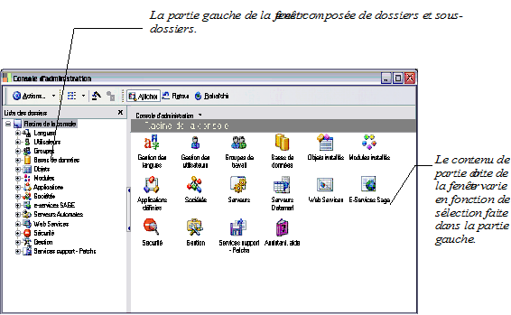
Le détail des possibilités de cette fenêtre est présenté dans les pages suivantes, en fonction de l'action à mener.
Barres d’outils de la Console Administration
La fenêtre de l’application comporte plusieurs barres d’outils :
Barre d’outils générale
Barre d’outils générale
Les boutons des barres d’outils proposent des accès rapides à certaines fonctions :
| affiche le bureau, permet de retrouver la Ligne 1000 en minimisant les autres programmes ouverts. | |
ouvre une application ou une société. | |
| affiche ou masque la barre Outlook. | |

|
propose les menus disponibles. |
| propose la sélection d’une langue. | |
| permet de choisir la base de données par défaut. | |
| ouvre la fenêtre «Ouvrir un écran», permettant de sélectionner un écran. | |
permet d’afficher le résultat d’une requête. | |
| ouvre la fenêtre «Ouvrir un rapport» permettant de sélectionner un formulaire. | |
| ouvre l’assistant permettant de créer des écrans (1) . | |
| ouvre la fenêtre de «construction d’une requête» (2) . | |
| active l’Inverseur, une fonction de conversion rapide permettant de visualiser les montants en devise d’équivalence. | |
| permet d’ajouter aux favoris la fenêtre active. | |
| affichent l’aide. | |
| 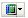 | permet l’affichage du manuel électronique. |
affichent respectivement les montant en « kilos », « millions » ou « unités ».
Pour plus d'informations, voir respectivement :
- le manuel Designer d’écrans 1000.
- le manuel Concepteur de requêtes et Designer d'états 1000.
Barre d’outils propre à la Console Administration
Barre d’outils propre à la Console Administration
Le bouton Actions permet :
- de créer, à l’aide des assistants, une base de données, un module, une application, une société et d’installer des paquets ;
- de démarrer l’assistant de sauvegarde / restauration / transfert.
- de démarrer l’éditeur de scripts SQL ;
- de démarrer le gestionnaire expert d’objets d’interface ;
- de redéfinir le chemin d’installation du programme;
- de démarrer l’assistant du comparateur de menus,
- de modifier vos objets d’interface,
- d’afficher la rubrique d’aide ou l’aide active ;
- d’imprimer un rapport technique sur votre profil matériel et applicatif utilisé ;
- de rafraîchir l’affichage des données ;
- de quitter la Console Administration.
Définir le chemin d’installation
Action / Expert / Définir le chemin d’installation
La fonction Définir le chemin d’installation permet à l’utilisateur d’indiquer un nouveau chemin pour installer le produit (autre que le cédérom d’installation):
- Si aucune installation n’a été faite, indiquez par un nouveau chemin où se trouvent les informations nécessaires à l’installation,
- Si une installation existe déjà, vous pouvez définir le nouveau répertoire où se trouvent les informations.
Action / Expert / Assistant de comparaison des menus
L’assistant de comparaison des menus a pour objectif de vous guider dans la procédure de comparaison de menus de différentes applications. Il offre ainsi la possibilité à l’utilisateur de retrouver rapidement les changements entre une mise à jour de l’application et ses menus personnalisés.
Le comparateur met en évidence les différences fonctionnelles entre deux menus : nouveaux éléments, éléments supprimés ou déplacés, changements de libellé ou d’action.
En complément, vous pouvez vous reporter au § «Personnalisation des menus», page 183' .
La procédure de rapprochement des menus s’effectue en deux étapes :
Sélection des menus à comparer,
Comparaison.
Sélection des menus
Sélectionnez la commande Assistant de comparaison des menus
pour activer la fenêtre de sélection des menus à comparer.
 Sélectionnez les menus à comparer à l’aide du bouton ci-contre. Les menus sont présentés en différents niveaux d’arborescence.
Sélectionnez les menus à comparer à l’aide du bouton ci-contre. Les menus sont présentés en différents niveaux d’arborescence.
Deux ou trois menus peuvent être rapprochés.
Menu de référence
Ce menu peut être, par exemple, le menu d’application fourni par l’installateur lors d’une mise à jour du produit.
Ancien menu
Cette zone ne doit pas être obligatoirement rensenseignée.
Si le menu de référence possède des versions historisées, il est possible dans ce champ de sélectionner une version ancienne du menu et mettre en évidence les modifications.
Ce bouton annule le menu sélectionné.
Menu
Ce menu est modifiable. Il s’agit, par exemple, du menu personnalisé par l’utilisateur.
 Cliquez sur le bouton Suivant.
Cliquez sur le bouton Suivant.
Comparaison
Comparaison
Différences
Chaque différence est signalée par une ligne et un type distincts :
- Action différente (texte en bleu) : le libellé est le même, mais l’action a changé. La différence est spécifiée dans la partie droite de l’écran.
- Libellé différent : l’action est la même mais le libellé a changé.
- Ajout (texte en vert): la fonction n’existait pas dans le menu de référence.
- Suppression (texte en rouge) : la fonction existe seulement dans le menu de référence.
- Emplacement différent : la fonction est identique, mais le chemin a changé.
Vous pouvez agir sur les menus comparés via les menus contextuels des zones suivantes zones d’affichage des menus.
Pour appliquer les différences relevées dans le menu modifiable, affichez le menu contextuel de la zone supérieure.

Appliquer les différences
Activer la fonction Appliquer la différence copie le changement relevé dans le menu de référence dans le menu modifiable.
Supprimer les lignes sélectionnées
Vous pouvez supprimer dans la liste des différences une ligne sélectionnée. La suppression n’affecte pas le menu modifiable.
Si vous faites un clic droit sur les zones du menu de référence ou du menu modifiable, le menu contextuel propose les fonctions suivantes :
Activer la commande de synchronisation des menus vous permet de prendre en compte les différences données par le menu de référence dans le menu modifiable . Le programme recherche l’élément correspondant dans le menu modifiable.
Cette fonction vous assure qu’à chaque changement le programme va rechercher l’élément correspondant dans le menu modifiable.
Afficher seulement les différences
Cette option propose un affichage simplifié des différences entre les menus. Seules les modifications apparraisent.
Copier cet élément
A l’aide de cette option vous pouvez copier les attributs de l’élément (qui seront visibles dans la zone Différences) pour les réappliquer dans le menu à modifier le cas échéant.
Insérer cet élément
Sélectionnez cette commande afin d’ajouter l’élément redéfini dans le menu modifiable.
Propriétés
Cette commande donne accès aux attributs de l’élément sélectionné.
Les options d’affichage
Vous pouvez choisir les options d’affichage à l’écran, en utilisant les icônes grandes ou petites, en affichant les éléments dans une liste ou en affichant les informations de chaque élément de la fenêtre.
Démarrage d’un assistant

Permet de sélectionner un assistant à lancer. Il suffit de le sélectionner dans la liste proposée :
Insertion d’un élément
Lorsqu’un des éléments de la console est sélectionné (dans l’écran ci-dessous, il s’agit de Groupes)…
ce bouton permet de procéder à une création.
Ce bouton est actif pour :
- la gestion des utilisateurs et des groupes utilisateurs du programme,
- la gestion des bases de données,
- la gestion des modules,
- la gestion des applications,
- la gestion des sociétés,
- la gestion des contrats e-services,
- la gestion des serveurs.
Ces possibilités sont décrites dans la suite de ce manuel.
Choix du mode d’affichage
CVous cliquez sur ce bouton pour afficher ou non l’arborescence des dossiers.
Permet de revenir à un niveau supérieur de l’arborescence de la Console Administration.
Permet de mettre à jour l’affichage à l’écran.
Modifications des objets d’interface
Menu Actions / Expert / Assistant de modification des objets d’interface
L’assistant de modification des objets d’interface a pour objectif de récupérer les écrans personnalisés des versions antérieures à la version 5.50 de la Ligne 1000 et de les convertir dans la nouvelle ergonomie.
| Ecran versions antérieures à la version 5.50 | Ecran versions 5 et supérieures |
Le logiciel va convertir de la façon suivante :
- le premier niveau d’onglets est transformé en treebook,
- les boutons de la barre de statut sont maintenant sous forme d’icônes sous la barre de menus,
- les actions réalisées par ces boutons sont également déployées par des menus,
- les actions, le cas échéant, sont placées dans un menu (menu Actions).
Pour convertir vos écrans personnalisés ouvrez l’Assistant de modification des objets d’interface du menu Actions / Expert.
Prenez connaissance de l’écran de bienvenue. Il vous signale, par une case à cocher que le programme va procéder à une série de transformations sur les composants.
Cliquez sur le bouton [Suivant] pour poursuivre la procédure de transformation.
Vous devez impérativement cocher l’option de compatibilité des écrans web pour activer le bouton Suivant.
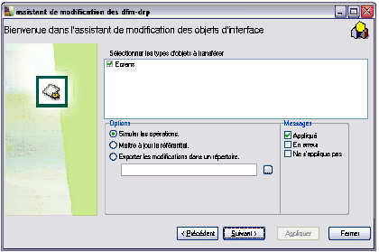
Vous devez choisir sous quelles modalités vous allez convertir vos écrans.
Types d’objets à transférer
Définissez quels types d’objets vous souhaitez transférer dans la version que vous venez d’acquérir. Cochez la case Ecrans.
Options
Vous avez plusieurs possibilités de sauvegarde de vos nouveaux écrans :
Simuler les opérations
Lorsque vous cochez cette option, le programme va réaliser les transformations mais ne sauvegardera pas le nouvel écran. vous pouvez de cette façon repérer les erreurs éventuelles liées à la transformation de l’écran.
Mettre à jour le référentiel
Si vous cochez cette option le programme enregistrera votre nouvel écran directement dans la base master.
Exporter les modifications dans un répertoire
En sélectionnant cette option, le programme va stocker le nouvel écran dans un répertoire que vous pouvez définir dans le champs suivant. le programme propose par défaut le répertoire forms de la Ligne 1000.
Messages
Après avoir défini vos options, vous devez choisir le type de messages que vous souhaitez consulter dans le cadre d’une erreur éventuelle lors de la conversion :
- appliqué : c’est à dire les écrans concernés par la conversion,
- en erreur : les écrans que le programme ne peut convertir,
- ne s’applique pas : les écrans non concernés par la conversion.
Ces messages seront disponibles dans le dernier écran de l’assistant.
Validez vos paramètres par le bouton Suivant.
Vous accédez à la liste des paquets. Sélectionnez les paquets comportant des écrans personnalisés. Le logiciel ne prendra dans les paquets que les écrans modifiés par l’utilisateur. Vous pouvez utiliser les boutons Cocher tout et Décocher tout.Un champ filtre est disponible pour saisir le nom d’un écran si vous le connaissez, ou utiliser l’opérateur % pour convertir uniquement les écrans «commençant par».
Confirmez vos sélections en cliquant sur le bouton Suivant.
Appliquez tous vos paramètres de transformation avec le dernier écran en cliquant sur le bouton Appliquer. Le logiciel affichera ici tous les messages demandés précédemment dans l’écran de sélection des options et messages. Vous pouvez sauvegarder le compte-rendu par le bouton Sauvegardez sous. Il ouvre une fenêtre classique d’enregistrement de fichiers.
Langues
Généralités
Le dossier Langues permet de définir les langues utilisées pour l’ensemble des applications Ligne 1000.
Le menu contextuel permet d’ajouter ou supprimer une langue, de définir la langue initiale du conteneur.
Ajouter une langue
Ajouter une langue
Pour ajouter un dictionnaire de traduction, cliquez sur la commande Ajouter une langue.
Sélectionnez la langue à ajouter et cliquez sur le bouton Ok.
Supprimer une langue
Supprimer une langue
Pour supprimer un dictionnaire de traduction, sélectionnez la commande Supprimer une langue.
Sélectionner la langue à supprimer et cliquez sur le bouton Ok.
Langue initiale
Langue initiale
La langue initiale est celle de l’application ou conteneur, avant la connexion à la base. Elle est définie dans la base de registre et peut être différente d’un ordinateur à l’autre.
Il est possible d’affecter une langue à un utilisateur ( Utilisateurs / Modifier / Langue défaut ).
Pour choisir la langue initiale, cliquer sur la commande Langue initiale.
Sélectionner la langue et cliquez sur le bouton Ok.
Chaque langue est associée à un menu contextuel.
Les fonctions Supprimer et Construire le dictionnaire des objets sont détaillées dans les paragraphes ci-dessous.
Paramètres régionaux
Paramètres régionaux
Cette fonction permet de paramétrer les options d’affichage de la langue :
- choix des séparateur de date, décimaux, de milliers et de l’heure,
- choix des formats de date, de l’heure,
- choix des symboles AM et PM.
Statistiques
Statistiques
Si vous lancez cette option, un fichier texte vous liste :
- tous les dictionnaires,
- le nombre de messages traduits,
- le nombre de messages non traduits,
- les messages supprimés.
Traduire une langue
Seules les langues de type occidental utilisant le code page ANSI Latin-1 (1252 ou iso-8859-1) peuvent être supportées par l’outil de traduction Ligne 1000.
Pour l’édition des lettres-chèques de l’application Sage 1000 Gestion Comptable et Financière, seules les langues suivantes sont prises en charge pour la traduction des montants en lettres : Français, Espagnol, Portugais, Tunisien, Allemand, Anglais.
Les actions sont présentées dans l’ordre logique de déclenchement.
La traduction des interfaces est faite à l’aide des dictionnaires de traduction.
Extraire une langue
Extraire une langue
Une fois les langues définies dans le dossier Langues, vous devez construire un dictionnaire.
Un dictionnaire peut avoir plusieurs types :
- Source, provenant du code source, des écrans Outils ainsi que des paquets métiers,
- Interface, provenant des écrans et des états,
- Documentation, provenant de la documentation du modèle (peut appartenir à une application ou à un objet),
- Menu provenant des menus des applications.
Contruire les dictionnaires des objets
Contruire les dictionnaires des objets
Pour construire un dictionnaire vous pouvez :
- Extraire les messages,
- Copier les messages à partir des dictionnaires de référence.
Cette méthode est réalisable s’il existe des dictionnaires dans une autre langue. Elle est également plus rapide que l’extraction. Cependant, si les dictionnaires de référence ne sont pas à jour, le dictionnaire final ne le sera pas non plus.
Un fichier delta est créé suite à une modification du dictionnaire fourni par Sage ou en lecture seule. Le dictionnaire original ne sera pas modifié, et pourra être écrasé par une mise à jour.
Construire les dictionnaires des applications
Construire les dictionnaires des applications
Le programme ne peut fournir de dictionnaires pour les applications, il est donc nécessaire de partir des dictionnaires des objets et de les fusionner pour les applications.
Cliquez sur la fonction Construire le dictionnaire «de la langue choisie» du menu contextuel.
Pour créer un dictionnaire affecté à toutes les applications, effectuez un clic droit sur une langue (dossier Langue's) puis cliquez sur la fonction Construire les dictionnaires des objets.
Les différents dictionnaires des objets construits, vous pouvez créer tous les dictionnaires associés aux applications. Le programme va mettre en corrélation les dictionnaires :
- Par fusion, c’est à dire la fusion des messages trouvés dans les dictionnaires des objets de l’application,
- Par copie des messages.
Construire les dictionnaires des serveurs
Construire les dictionnaires des serveurs
Si un serveur est associé à une application, les dictionnaires de l’application seront utilisés. Si plusieurs applications sont associées au serveur, des dictionnaires sont créés pour le serveur en utilisant les dictionnaires des applications. Dans ce cas, vous devez avoir coché la case «Reconstruction des dictionnaires» dans l’assistant de gestion des serveurs (dossier Serveurs de la console d’administration ).
Menus associés à chaque dictionnaire
Chaque dictionnaire a un menu contextuel associé, permettant de le modifier ou l’exporter.
Les fonctions Traduire, Supprimer et Actualiser les objets sont détaillées dans les paragraphes ci-dessous.
Exporter les messages / Exporter les translations
La fonction Exporter les messages exporte tous les messages dans un fichier texte, sans leur traduction.
La fonction Exporter les translations exporte toutes les traductions dans un fichier texte.
Dans la fenêtre classique de sélection d’un fichier, vous renseignez le nom du fichier à exporter.
Cliquez sur le bouton Exporter afin de valider l’exportation du dictionnaire.
Importer les messages / Importer les traductions
La fonction Importer les messages importe tous les messages contenus dans un dictionnaire.
La fonction Importer les traductions importe toutes les traductions dans un fichier texte.
Dans la fenêtre classique de sélection d’un fichier, renseignez le nom du fichier à importer.
Cliquez sur le bouton Importer afin de valider l’importation du dictionnaire.
Remplacer par
Le dictionnaire fourni par le programme peut être duppliqué et transformé par un dictionnaire personnalisé : c’est le dictionnaire delta. Le remplacement se fait de manière transparente, en sélectionnant le fichier à remplacer dans une fenêtre de sélection classique. Si un même message est contenu dans le dictionnaire original et le dictionnaire delta, c’est la traduction delta qui est prioritaire.
Sauvegarder sous
Dans la fenêtre de sélection, un fichier (*.dut) vous est proposé pour sauvegarder votre dictionnaire.
Mise à jour des dictionnaires
La mise à jour des dictionnaires se fait à l’aide de la fonction Mise à jour (reconstruction) du menu contextuel du dossier Traductions. Cette fonction réalise l’ensemble des opérations de mise à jour des dictionnaires de référence, après une mise à jour du produit.
Il est nécessaire de contruire un dictionnaire de langue française uniquement pour les paquets dynamiques. Il existe déjà pour les paquets statiques.
Après une mise à jour des applications, de nouveaux dictionnaires de référence sont déployés. Les dictionnaires des objets dans une langue étrangère, ainsi que ceux des applications peuvent être alors obsolètes. Pour effectuer une mise à jour des dictionnaires en langue étrangère vous devez :
Actualiser les dictionnaires des objets de la langue concernée à partir du dictionnaire de l’application ( fonction Actualiser les dictionnaires des objets du menu contextuel du dossier Traductions ).
Reconstruire les dictionnaires des objets par extraction ou par copie à partir des dictionnaires de la langue de référence, en français ( fonction Construire une langue du menu contextuel du dossier Langues ). Les messages supprimés sont marqués comme tels.
Fusionner les dictionnaires des objets étrangers dans un nouveau dictionnaire de l’application ( fonction Construire un langue du menu contextuel du dossier Applications ).
Distribuer les messages d’un dictionnaire
Distribuer les messages d’un dictionnaire
Afin ques les messages d’un dictionnaire soient appliqués aux messages identiques d’autres dictionnaires, il est nécessaire d’utiliser la fonction Actualiser les dictionnaires des objets du menu contextuel de chaque dictionnaire. Cette fonction met à jour les traductions d’un message dans tous les dictionnaires qui le comporte.
Visualiser une traduction
Visualiser une traduction
Sélectionnez l’option Traduire du menu contextuel du dictionnaire choisi.
Menu Fichier
Le menu Fichier permet d’ouvrir un dictionnaire ou d’enregistrer le dictionnaire en cours dans un fichier.
Dans les deux cas, le programme propose l’ouverture d’une fenêtre de sélection classique.
Menu Outils
Le menu Outils permet d’agir directement sur les messages :
- Supprimer les messages :
- Marquez le ou les messages à supprimer,
- Validez par Ok,
- Cliquez sur la fonction Supprimer les messages,
- Le message supprimé est spécifié dans la colonne Supprimé,
- Enregistrez.
- Détruire les messages supprimés :
- Sélectionnez le message supprimé,
- Cliquez sur la fonction Détruire les messages supprimés,
- Enregistrez.
- Vérifier l’orthographe des messages :
- Sélectionnez les messages dont l’orthographe doit être vérifiée,
- Cliquez sur la fonction Vérifier l’orthographe des messages.
Menu Export

Le menu Export permet d’exporter dans un ficher texte :
- Tous les messages,
- Seulement les messages affichés.
Sélectionnez le fichier dans une fenêtre de sélection classique et validez par le bouton Enregistrer.
La partie supérieure de l’écran permet de filtrer les messages :
- Vérouillés,
- Traduits,
- Marqués,
- Importés,
- Supprimés,
- Erronés.
Un filtre fonctionne de la manière suivante :
- Si le filtre est grisé, les messages ne sont pas filtrés,
- Si le filtre est coché, seuls les messages ayant le statut sont affichés,
- Si le filtre est décoché, seuls les messages n’ayant pas le statut sont affichés.
Pour effectuer des vérifications et corrections, affichez le menu contextuel du message choisi.
Le menu contextuel comporte les options d’un menu classique ( Copier, Sélectionner..) ainsi que les fonctions suivantes :
- Colonnes disponibles : donne la liste des colonnes disponibles,
- Supprimer la colonne : supprime la colonne sélectionnée,
- Propriétés de la colonne : la fenêtre de propriétés d’une colonne est composée de deux onglets,
- Onglet Titre :
Cet onglet est détaillé dans le manuel du Designer d’écrans ( composant TFWOutGrid / § Titre et Style ).
- Onglet propriétés
L’onglet «Propriétés» sert à personnaliser les paramètres d’affichage du texte de la colonne.
Pour plus de renseignements sur l’onglet Propriétés, vous pouvez consulter le manuel du Designer d’écrans.
Importer un nouveau dictionnaire
Importer un nouveau dictionnaire
Cette fonction ajoute un dictionnaire à partir d’un fichier dictionnaire.
Dans la fenêtre d’importation d’un nouveau dictionnaire (dossier Traductions / Importer un nouveau dictionnaire), vous renseignez la langue, l’origine du fichier à importer à l’aide du bouton puis vous sélectionnez le type.
Les fichiers de données ne sont pas traduits lorsqu’on importe ou lance une édition.
Visualiser / Modifier les messages
Visualiser / Modifier les messages
Si vous êtes dans une fenêtre de l’application, vous pouvez accéder directement par la combinaison des touches Ctrl + F9 aux messages.
Selectionnez un message et effectuez un clic droit pour afficher l’option de modification des messages. La fenêtre de traduction apparaît.
Utilisateurs
Un utilisateur identifie une personne physique de l'entreprise, utilisatrice de l’application.
Le dossier
Utilisateurs rassemble tous les utilisateurs créés dans la console d’administration pour l'ensemble des applications.
Un groupe correspond à un ensemble d’utilisateurs qui auront les mêmes caractéristiques (au niveau des sociétés qu’ils pourront utiliser, de leurs droits et des menus qui leur seront associés). Le dossier Groupes dans l’Administrateur, rassemble tous les groupes créés qui pourront utiliser les applications.
Les différents types d’utilisateurs et de groupes
| Paramétrage | Authentification | Droits et rôles | Menus et éléments personnalisés |
| L’utilisateur est associé à la société | L’utilisateur | ||
| Les éléments associés à l’utilisateur dans la société | |||
| L’utilisateur est dans un ou plusieurs groupes associés à la société | Le premier groupe contenant l’utilisateur (G1) | ||
| Les éléments associés à chaque groupe contenant l’utilisateur. |
L'Administrateur
L'Administrateur
L’utilisateur admin ne peut être ni renommé ni supprimé. C'est l'administrateur de l’environnement Ligne 1000.
Nous vous conseillons d’attribuer un mot de passe à l’utilisateur «admin» le plus rapidement possible.
Créer un utilisateur
Créer un utilisateur
Etape 1 : Saisir les caractéristiques de l'utilisateur
Pour créer un utilisateur, cliquez sur le dossier
Utilisateurs dans la partie gauche de l’écran, puis sur la fonction Insérer des éléments... du menu contextuel.
Identification
Login
Il correspond au code utilisateur. Ce login permet à l’utilisateur de s’identifier lors de l’accès au programme.
Libellé
C’est ce libellé qui apparaîtra dans l’application. Il correspond au nom complet de l'utilisateur.
Mot de passe
Mot de passe propre à l’utilisateur, lui permettant de s’identifier lors de la connexion.
Confirmation
Saisissez le mot de passe une seconde fois sur cette zone, afin de le confirmer.
Validité/ Exp. (expiration)
Indiquez une date de début et de fin de validité du mot de passe de l'utilisateur. Après la date d'expiration, le mot de passe ne permettra plus l'accès au programme.
Cette notion de période de validité permet de forcer l’utilisateur à changer régulièrement de mot de passe, pour plus de sécurité.
Login réseau
Il s'agit du login système de l'utilisateur pour l'accès au réseau global. Purement informatif. Aucune utilisation dans les applications pour l’instant.
Langue défaut
Il s'agit de la langue par défaut affectée à l’utilisateur. Le programme propose par défaut le français.
Renseignez l’adresse E-mail de l’utilisateur s’il en possède une.
Groupes
Renseignez si nécessaire le nom du ou des groupe(s) de travail auquel l’utilisateur peut appartenir.
Pour ce faire, cliquez sur le bouton affiché en haut et à gauche de la liste. Vous accédez à la fenêtre de sélection suivante :
Sélectionnez le groupe auquel vous souhaitez associer l’utilisateur puis cliquez sur le bouton Valider.
Pour procéder à une sélection multiple, appuyez sur la touche Ctrl de votre clavier puis cliquez successivement sur chaque groupe à sélectionner.
Le bouton Actualiser permet de rafraîchir l'affichage.
Pour refermer la liste, cliquez sur le bouton en haut à droite de la fenêtre.
Rôles
L’onglet «Rôles» permet de personnaliser le profil de l'utilisateur. Un rôle définit les actions autorisées ou interdites pour un utilisateur.
Renseignez si nécessaire le ou les rôles de l’utilisateur.
Pour ce faire, cliquez sur le bouton affiché en haut et à gauche de la liste. Vous accédez à la fenêtre de sélection des rôles.
Sélectionnez le rôle à attribuer à l’utilisateur puis cliquez sur le bouton Valider.
'Pour procéder à une sélection multiple, appuyez sur la touche 'Ctrl de votre clavier puis cliquez successivement sur chaque rôle à sélectionner.
Le bouton Actualiser permet de rafraîchir l'affichage.

Pour refermer la liste, cliquez sur le bouton en haut à droite de la fenêtre.
Profils de droits
Cet onglet est détaillé dans le § «Association d’un profil à un utilisateur, un groupe ou une application», page 278 .
Etape 2 : Associer l'utilisateur à une société et une application
Un nouvel utilisateur doit être associé à une société, pour une application.
Un utilisateur peut être associé à une société de deux manières :
- par un « glisser/déplacer » sur la fenêtre de la console d’administration,
- ou par l’assistant de gestion des sociétés.
Association par Glisser / Déplacer
Pour ce faire, ouvrez le dossier Sociétés puis le dossier de l’application choisie.
Ouvrez le dossier
Utilisateurs de la partie gauche de la fenêtre puis cliquez sur l'utilisateur à affecter à la société.
Sans relâcher le bouton de la souris, faites glisser l'icône de l'utilisateur dans le dossier de l'application (à l'intérieur du dossier Sociétés).
Lorsque le curseur se transforme en rectangle blanc (indiquant la possibilité de lâcher l’élément), relâchez le bouton de la souris ; le lien est alors créé automatiquement.
Association par l’Assistant de gestion des sociétés
Sélectionnez la société à laquelle doit être associé l’utilisateur. A l’aide du clic droit activez la fonction Modifier la société. L’Assistant de gestion des sociétés s’ouvre. Pour associer un utilisateur, cliquer sur le bouton
, la deuxième fenêtre de l’Assistant s’ouvre.
Après sélection des utilisateurs et/ou des groupes à associer à l’application, cliquez sur 
.
Modifier un utilisateur
Modifier un utilisateur
Cliquez sur le dossier
Utilisateurs pour afficher la liste des utilisateurs dans la partie droite de la fenêtre.
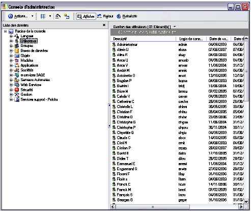
Les trois possibilités de modifier un utilisateur :
- Depuis la partie gauche de la fenêtre :
- sélectionnez-le et activez la fonction «Modifier» du menu contextuel
- ou double-cliquez sur son nom
- Ou, depuis la partie droite de la fenêtre :
- double-cliquez sur la ligne de l'utilisateur choisi.
Consulter le § ' «
Créer un utilisateur
», page 109' pour l'utilisation de cette fenêtre.
La modification du nom de l'utilisateur est automatiquement répercutée sur tous ses liens, notamment dans les groupes de travail et dans les dossiers des applications au niveau des sociétés.
Supprimer un utilisateur
Supprimer un utilisateur
Dans la partie gauche de la fenêtre, sélectionnez l'utilisateur dans le dossierhttps://frp.sage.fr/wiki1000/medias/images/prise_en_main/image68.png
Utilisateurs puis activez la fonction «Supprimer» du menu contextuel.
La suppression d'un utilisateur est automatiquement répercutée dans les groupes de travail et dans les dossiers des applications au niveau des sociétés
Administrer les utilisateurs et les groupes
Administrer les utilisateurs et les groupes
Droits sur les classes et propriétés
L’utilisateur qui vient d’être créé a tous les droits sur les classes et les propriétés.
Il sera donc possible de lui interdire un certain nombre d’actions au niveau d’une ou plusieurs classes et même au niveau d’une ou plusieurs propriétés de ces classes.
Droits sur les applications
Lorsqu’un utilisateur est créé, il a certains droits sur l’application. Il est possible d’étendre ses droits à deux niveaux :
- En lui attribuant un rôle spécifique lui permettant de réaliser des actions bien définies sur n’importe quelle application.
L’utilisateur jouera ce rôle dans toutes les applications auxquelles il sera rattaché ;
- En lui attribuant des droits sur une application spécifique dans une société bien précise.
L’utilisateur jouera ce rôle uniquement dans cette association société / application.
L’utilisateur a accès à toutes les options des menus, il peut créer des écrans, des requêtes, personnaliser sa barre d’outils.
Vous pouvez vous reporter au § sur la ' «Gestion des droits
», page 254' .
Groupes de travail
Un groupe de travail permet de rassembler plusieurs utilisateurs, travaillant sur les mêmes applications et les mêmes sociétés, dans une même entité fonctionnelle. Il facilite ainsi la gestion collective des utilisateurs.
Après sa création, un groupe pourra être affecté à une société au même titre qu'un utilisateur individuel.
Un groupe comptable permet de rassembler l’ensemble des utilisateurs de l’application comptable.
Créer un groupe de travail
Créer un groupe de travail
Etape 1 : Définir les caractéristiques du groupe
Pour créer un groupe de travail, cliquez sur
Groupes de la partie gauche de la fenêtre, puis sur la fonction «Insérer des éléments...» du menu contextuel.
Indiquez le nom du groupe de travail à créer.
Libellé
Le libellé saisi ici apparaîtra dans la fenêtre de la Console d'administration.
Utilisateurs
Sélectionnez les utilisateurs devant composer ce groupe de travail.
Pour cela, cliquez sur le bouton ci-contre. Vous accédez à la fenêtre suivante :
Sélectionnez le ou les utilisateurs qui feront partie du groupe, puis cliquez sur le bouton Valider.
Pour procéder à une sélection multiple, appuyez sur la touche Ctrl de votre clavier puis cliquez successivement sur chaque nom à sélectionner.
Le bouton Actualiser permet de rafraîchir la liste.

Cliquez sur ce bouton pour refermer la fenêtre.
Rôles
L’onglet «Rôles» permet de personnaliser le profil du groupe utilisateur. Un rôle définit les actions autorisées pour un groupe.
Pour associer un rôle au groupe d’utilisateurs, cliquez sur le bouton affiché en haut et à gauche de la liste. Vous accédez à la fenêtre de sélection des rôles.
 Sélectionnez le rôle à attribuer au groupe puis cliquez sur le bouton Valider.
Sélectionnez le rôle à attribuer au groupe puis cliquez sur le bouton Valider.
Pour procéder à une sélection multiple, appuyez sur la touche Ctrl de votre clavier puis cliquez successivement sur chaque rôle à sélectionner.
Le bouton Actualiser permet de rafraîchir l'affichage.
Pour refermer la liste, cliquez sur le bouton en haut à droite de la fenêtre.
Validation du groupe
Cliquez ensuite sur Ok de la fenêtre «Groupe» pour valider la création du groupe de travail.
Etape 2 : Affecter un utilisateur à un groupe de travail
Pour associer un utilisateur à un groupe, vous avez deux possibilités :
- Soit en renseignant l'onglet «Utilisateurs» décrit ci-dessus,
- Soit en sélectionnant un utilisateur puis en le glissant à l’aide de la souris dans le groupe de travail correspondant.
Ouvrez le dossier du groupe choisi (dans notre exemple Groupe Qualité Produit).
Ouvrez ensuite le dossier
Utilisateurs de la partie gauche de la fenêtre puis cliquez sur l'utilisateur à affecter au groupe.
Sans relâcher le bouton de la souris, faites glisser l'icône de l'utilisateur sur l’intitulé du dossier du groupe.
Lorsque le curseur se transforme en rectangle blanc (indiquant la possibilité de lâcher l’élément), relâchez le bouton de la souris ; le lien est alors créé automatiquement.
Etape 3 : Associer un groupe de travail à une application
Les groupes de travail peuvent être associés à chaque application 'au niveau des dossiers des sociétés.
Ouvrez le dossier Sociétés puis le dossier de la société choisie (dans notre exemple Société de démonstration). La liste des applications associées s'affiche (dans notre exemple Comptabilité générale et analytique).
Ouvrez le dossier 
Groupes de la partie gauche de la fenêtre puis cliquez sur le groupe à affecter à l'application.
Sans relâcher le bouton de la souris, faites glisser l'icône du groupe sur l’intitulé du dossier de l'application (à l'intérieur du dossier Société).
Lorsque le curseur se transforme en rectangle blanc (indiquant la poss'ibilité de lâcher l’élément), relâchez le bouton de la souris ; le lien est alors créé automatiquement.
Lors de la connexion d’un utilisateur à une société (via une application), il est d’abord recherché en tant qu’utilisateur, puis à défaut, en tant que membre d’un groupe.
Vous créez un utilisateur Denis et un groupe Commerciaux.
Vous insérez Denis dans Commerciaux.
Vous associez le groupe Commerciaux dans l'application de Comptabilité dans la société Ma société. Lorsque Denis se connecte à Ma société via l'application de Comptabilité, il est reconnu comme membre du groupe Commerciaux.
Vous associez maintenant Denis à l’application de Comptabilité dans la société Ma société. Lorsque Denis se connecte dans Ma société via l'application de Comptabilité, il est reconnu comme utilisateur.
En utilisant l’assistant de création de société, l’affectation des utilisateurs et des groupes de travail se fait de manière automatique.
Le chapitre concernant ' «
Les Assistants», page 286'.
Modifier un groupe de travail
Modifier un groupe de travail
Sélectionnez le groupe à modifier dans le dossier
G'roupes' puis validez la fonction «Modifier» du menu contextuel.
Vous accédez à la fenêtre «Groupe». Vous pouvez modifier n’importe quel élément de cette fenêtre.
Modification du nom du groupe
Pour modifier le nom d'un groupe de travail, vous pouvez également, dans la partie gauche de la fenêtre, dans le dossier
Groupes, cliquer deux fois sur le nom du groupe à modifier. Le nom devient accessible en saisie.
La modification du nom d’un groupe de travail est immédiatement répercutée sur tous ses liens avec les applications au niveau des dossiers des sociétés.
Supprimer un utilisateur d’un groupe
Dans la partie gauche de la fenêtre, sélectionnez le groupe (dans le dossier
Group'es') puis l'utilisateur à supprimer et validez la fonction «Supprimer» du menu contextuel.
Un message vous demande confirmation.
Supprimer un groupe de travail
Supprimer un groupe de travail
Dans la partie gauche de la fenêtre, sélectionnez le groupe (dans le dossier https://frp.sage.fr/wiki1000/medias/images/prise_en_main/image99.pngC
Groupes) puis activez la fonction «Supprimer» du menu contextuel.
Par mesure de sécurité, deux messages de confirmation s'affichent successivement.
La suppression d'un groupe est automatiquement répercutée dans tous ses liens avec les applications dans le dossier des sociétés.
Bases de données
Une base de données est le lieu de stockage de vos données. Le dossier
Bases de données rassemble toutes les bases de données créées et gérées dans la console d’administration.
Les différents types de bases de données
Les différents types de bases de données
Il existe deux types de base de données :
- Le référentiel : il correspond à la base de données de l’administration.
Le référentiel est stocké sur le serveur de base de données relationnelle utilisé. Le référentiel regroupe les informations suivantes :
- Les utilisateurs et les groupes créés ainsi que leurs droits et interdictions ;
- Les bases de données créées ;
- Les objets métiers, systèmes, d’interface installés ;
- Les modules présents ;
- La configuration des applications ;
- Les sociétés créées ;
- Les éléments d’amendabilité.
- Les rôles et droits définis par utilisateur ou groupes.
- Les éléments de documentations
- Les préférences utilisateurs
- Les dictionnaires de traduction
- Les bases de données produits : il s’agit des bases qui vont permettre de stocker les données en provenance des applications (ex : les comptes, les tiers, les modes de règlement, les divers paramétrages…).
Elles sont également stockées sur le serveur de base de données relationnelle utilisé.
Il existe une ou plusieurs bases de données par société. Ces bases sont communes à toutes les applications utilisées dans la société.
Créer une nouvelle base de données
Créer une nouvelle base de données
Cette fonction permet de créer une base destinée à recevoir des données. Il est important de ne pas la créer avec le nom et l’emplacement d’une base existante. De plus, vous ne pouvez créer qu’une seule base à la fois.
Pour créer une nouvelle base de données, vous cliquez sur le dossier
Bases de données puis sur la fonction «Créer une base de données» du menu contextuel.
Etape 1 : Identifier la nouvelle base de données
Nom
Indiquez le nom complet de la nouvelle base de données. Par exemple Mabase.
Libellé
Indiquez le libellé explicatif de cette nouvelle base de données. C’est ce libellé qui apparaîtra dans la fenêtre de la Console d'administrationi.
Driver
Indiquez le type de Driver utilisé par cette base de données.
Serveur
Indiquez le nom du serveur sur lequel la base de données doit être créée.
URL
Zone renseignée automatiquement reprenant le type de Driver et le nom du serveur.
Cliquez ensuite sur 
pour poursuivre la procédure.
Etape 2 : Enregistrer la nouvelle base de données
Cliquez sur
pour lancer la création de la base de données.
Etape 3 : Affecter un utilisateur à une base de données
Pour associer un utilisateur à une base de données, vous avez deux possibilités.
Par sélection
Soit en sélectionnant un utilisateur puis en le glissant à l’aide de la souris dans la base de données correspondante :
Ouvrez le dossier de la base de données choisie puis le dossier 
Utilisateurs de la partie gauche de la fenêtre puis cliquez sur l'utilisateur à affecter au groupe. Sans relâcher le bouton de la souris, faîtes glisser l'icône de l'utilisateur dans le dossier de la base données.
Par le Login utilisateur
Soit par le menu contextuel en activant la fonction Login pour l’utilisateur.
Etape 4 : Affecter un module à une base de données
Pour associer un module à une base de données, vous devez sélectionner un module puis le glisser à l’aide de la souris dans la base de données correspondante .
Lorsque le curseur se transforme en rectangle blanc, relâchez le bouton de la souris ; le lien est alors créé automatiquement.
Enregistrer une base de données existante
Enregistrer une base de données existante
Cette fonction permet à l’administrateur de gérer, avec l'Administrateur 1000, une base de données déjà créée.
Pour enregistrer une base de données existante, cliquez sur le dossier
Bases de données puis sur la fonction «Enregistrer une base de données» du menu contextuel.
Nom
Indiquez le nom complet de la base de données.
Libellé
Indiquez le libellé explicatif de cette base de données. C’est ce libellé qui apparaîtra dans la fenêtre de la Console d'administration.
Driver
Sélectionnez le type de Driver utilisé par cette base de données.
Serveur
Indiquez le nom du serveur où la base de données doit être récupérée.
URL
Zone non saisissable, renseignée automatiquement.
La base de données utilise l’indexation de texte
Cochez cette zone si vous souhaitez activer l’option de recherche de texte intégral.
Cliquez ensuite sur 
pour poursuivre la procédure.
Enregistrement de la base de données
Cliquez sur
pour lancer l’enregistrement de la base de données.
Les éléments composants les bases de données
Les éléments composants les bases de données
Scripts en attente de mise à jour
Dans le cadre d’une mise à jour d’une application, les scripts de mise à jour définis dans le descriptif de l’application concernée, par paquet métier, sont associés aux bases de données utilisant cette application.
S’il existe des scripts de mise à jour associés à une base de donnée, celle ci doit être synchronisée.
Le § sur la ' «Synchronisation de la Base de Données
», page 137'.
Modules
Les modules attachés à la base de données définissent les composants métiers supportés par la base de donnée
Voir Le § sur les «
Modules
», page 178' .
Bases de données liées
Dans le cadre d’une société multi-bases, chaque base de donnée doit être liée à la base de transaction.
Cette opération est assurée par l’assistant des liaisons de gestion des bases de données liées et doit être reproduite autant de fois qu’il y a de liaisons à effectuer.
Vous devez effectuer un glisser-déposer de la base à lier vers la base de transaction.
La fenêtre de l’assistant de gestion des bases de données liées apparaît.
Vous devez renseigner le nom de la base de transaction déjà définie lors de la création de votre société multibases.
Cliquez sur 
pour poursuivre la procédure de liaison.
Cliquez sur
pour lancer la liaison de la base de données déterminée.
Vous pouvez fermer l’assistant.
Connexion par défaut
Cette fonction permet d’associer à une base de donnée, un identifiant autorisant tout utilisateur à se connecter.
Ceci évite de spécifier un login et un mot de passe différent par utilisateur ou groupe d’utilisateurs. Effectuez un clic droit et définissez la connexion par défaut.
La base de données pour laquelle vous souhaitez enregistrer un login est renseignée automatiquement par le programme et les zones Driver, Serveur et URL ne sont pas accessibles. La fenêtre «Base de donnée» s’ouvre.
Libellé
Il s’agit du libellé qui apparaîtra dans la fenêtre de la Console d'administration.
Login par défaut
Renseignez le login que devront saisir les utilisateurs de la base de données pour s’authentifier.
Mot de passe
par défaut
Renseignez, le cas échéant, le mot de passe que devront saisir les utilisateurs de la base de données pour s’authentifier.
Lorsque un login par défaut existe sur une base de données, le libellé du login est spécifé dans l’explorateur.
Les fonctions de gestion des bases de données
Les fonctions de gestion des bases de données
Si vous faites un clic droit sur une base de données existante, le menu contextuel propose les fonctions suivantes :

Editer
Cette fonction permet d'afficher les caractéristiques d'une base de données.
Supprimer
Cette fonction vous permet de supprimer l’enregistrement de la base dans la Console d'administration.
Elle n’est cependant pas supprimée physiquement sur le serveur
Lorsque vous lancez cette fonction, une fenêtre de confirmation apparaît.
Cliquez sur Oui pour confirmer.
Synchronisation de la Base de Données
Cette fonction permet de synchroniser la base de données avec le modèle métier contenu dans les modules associés et d’exécuter des scripts de mise à jour s’il y a lieu.
Vous obtenez des informations détaillées et pouvez repérer d’éventuelles erreurs très facilement.
Le traitement de synchronisation peut être également lancé à partir d’une société.
Lorsque vous lancez le traitement, un message de confirmation apparaît.
Le détail du processus de synchronisation s’affiche :
- Dans la partie gauche de l’écran se trouve la liste des tâches qui vont être exécutées sur la base de données,
- Dans la partie droite de l’écran est généré un journal de traitements.
Barre d’outils de la fenêtre de synchronisation

https://frp.sage.fr/wiki1000/medias/images/prise_en_main/image123.pngActualise les données.
https://frp.sage.fr/wiki1000/medias/images/prise_en_main/image124.pngApplique un filtre sur les évènements.
https://frp.sage.fr/wiki1000/medias/images/prise_en_main/image125.pngEnregistre la log de traitement.
https://frp.sage.fr/wiki1000/medias/images/prise_en_main/image126.pngEfface la log.
https://frp.sage.fr/wiki1000/medias/images/prise_en_main/image127.pngInsère une marque dans le journal. Le bouton ouvre une fenêtre dans laquelle vous pouvez saisir un texte court. Ce texte déterminera une ligne en caractère rouge dans le journal, proposant un point de repère.
https://frp.sage.fr/wiki1000/medias/images/prise_en_main/image128.pngRecherche un document texte. La flèche à droite lance la recherche sur les documents associés.
Liste des tâches
La partie gauche de l’écran liste les traitements à réaliser lors de la synchronisation. Ils sont précédé d’icônes de couleurs différentes :
 traitement réalisé,
traitement réalisé,
- traitement non réalisé,
- erreur dans la réalisation du traitement.
Détail des tâches
La partie droite de l’écran affiche le détails des tâches effectuées et vous permet de définir le mode de sauvegarde d’un journal.
Onglet Log de traitement

L’onglet «Log de traitement» présente le journal du traitement en cours.
https://frp.sage.fr/wiki1000/medias/images/prise_en_main/image133.pngCe journal peut être sauvegardé en cliquant sur le bouton Sauvegarder la liste sous...Une fenêtre d’enregistrement de fichier s’ouvre et propose un enregistrement dans un dossier Log défini par défaut.
Onglet Options
L’onglet «Options» vous renseigne sur la base de données et vous permet d’agir sur la synchronisation et le journal de la base.
L’onglet «Options» est composé de deux panels :
- un panel renseigné automatiquement, donne le descriptif de la base de données,
- un panel proposant des actions sur la synchronisation ou le journal de traitement :
- Continuer en cas d’erreur sur une base : si une erreur est détectée lors de la synchronisation, celle-ci s’arretera instantanément. Si vous cochez cette option, l’erreur sera signalée mais le traitement se poursuivra.
- Vider la log à chaque changement de base : si vous synchronisez plusieurs bases, le journal de traitement concervera les logs de chaque base synchronisée. Si vous cochez cette option, le journal de traitement conservera uniquement le détail de la dernière synchronisation.
- Sauvegarder la log en fin de synchronisation : cochez cette option si vous souhaitez conserver systématiquement chaque log de traitement.
- Confirmer les suppressions dans la structure du modèle : si cette case est cochée, un message demande confirmation de la suppression d’objets à chaque fin de synchronisation. Cliquez sur le bouton Annuler pour conserver les objets créés n’appartenant pas au nouveau modèle. Cliquer sur le bouton OK pour les supprimer. Pour synchroniser les bases de données sans intervention de l’utilisateur, décocher cette case.
- Supprimer par défaut : cocher cette case revient à supprimer automatiquement tous les objets n’appartenant pas au nouveau modèle.
Pour plus de détails sur la syn'chronisation vous pouvez consulter le §' «
Synchronisation
», page 209' '.
Expert / Inverser le statut de synchronisation
Cette fonction permet de modifier le statut d’état de synchronisation de la base de données afin de forcer une synchronisation.
Login pour l'utilisateur…
Cette fonction permet d’associer à un utilisateur, un identifiant l’autorisant à se connecter.
Le programme propose la liste des utilisateurs créés.
Sélectionnez le nom de l’utilisateur pour lequel vous souhaitez enregistrer un login. La fenêtre «Login de connexion base de donnée / utilisateur» s’ouvre.
Base de donnée
La base de données de l’utilisateur est indiquée.
Utilisateur
Le nom de l’utilisateur sélectionné au préalable est indiqué.
Login connexion
Renseignez le login de connexion fournit par l’administrateur du serveur de base de données pour l’utilisateur.
Mot de passe
Vous pouvez saisir le mot de passe fournit par l’administrateur de base de données pour l’utilisateur.
Login pour le groupe…
Cette fonction permet d’associer à un groupe de travail, un identifiant l’autorisant à se connecter. Le programme propose la liste des groupes créés.
Sélectionnez le groupe pour lequel vous souhaitez enregistrer un login. La fenêtre «Login de connexion base de donnée / groupe» s’ouvre.
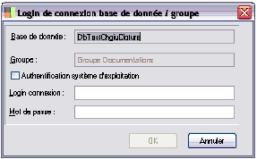
Base de donnée / Groupe
Les noms de la base de données et du groupe sélectionnés sont rappelés.
Login connexion
Renseignez le login fournit par l’administrateur du serveur de base de données que devront saisir les membres du groupe pour s’authentifier.
Mot de passe
Renseignez, le cas échéant, le mot passe fournit par l’administrateur du serveur de base de données que devront saisir les membres du groupe pour s’authentifier.
Interface SQL
Cette fonction vous permet de réaliser des requêtes dans les bases stockées dans SQL.
Reportez-vou's si nécessaire à la documentation du langage SQL fournit avec votre serveur de base de données relationnelles.
Un requête est une opération qui consiste à extraire d'une table (d'une base de données) tout ou partie des éléments qui s'y trouvent.
Elle peut être visualisée et/ou imprimée.
Par défaut, lorsque vous ouvrez l’éditeur SQL, vous avez un début de requête (select * from) dans la fenêtre de construction.
Le bouton Exécuter la requête permet de lancer l’exécution de votre requête et d’en vérifier le bon fonctionnement.
Le bouton Effacer les résultats permet, comme son nom l’indique, d’effacer les résultats.
Vous pouvez choisir le type de script.
Créer une requête
Pour créer une requête, sélectionnez Fichier / Nouveau. Il est possible de créer plusieurs requêtes en même temps. Dans ce cas, des onglets viennent s’ajouter. Vous n’aurez qu’à cliquer sur celui de votre choix pour passer d’une requête à une autre.
Ouvrir une requête
Sélectionnez Fichier / Ouvrir. Il est, là encore, possible d’ouvrir simultanément plusieurs requêtes.
Fermer une requête
Sélectionnez, dans le menu «Fichier», la commande «Fermer» ou «Fermer tou»t, selon le nombre de requêtes ouvertes.
Sauvegarder une requête
Dans le menu «Fichier», sélectionnez la commande «Sauvegarder sous» ou «Sauvegarder tout» selon le nombre de requêtes ouvertes.
Le répertoire Script du Container vous est proposé pour sauvegarder vos requêtes.
Associer des scripts de mise à jour
La fonction ouvre sur une fenêtre classique de sélection de fichiers. Une fois le fichier sélectionné, la mise à jour s’effectue de façon transparente pour l’utilisateur.
Ajouter / Supprimer une base liée
Par cette fonction vous créez les liens entre les bases de données utilisées en application groupe et la base de données groupe elle-même (définie comme base de transaction).
Gestion des modules
Cette fonction ouvre sur l’assistant de gestion des modules.
Pour le détail de cette fonction, vous pouvez vous reporter au § ' «Gestion des modules
», page 178' .
Objets
Les objets correspondent au contenu des applications. On distingue quatre natures d’objets :
- Objets Métiers : Les objets métiers, comme le nom « Métiers » le laisse entendre, sont relatifs aux différentes applications installées (comptabilité, trésorerie…).
- Objets Systèmes : Les objets systèmes représentent les différents éléments faisant fonctionner le produit (driver de base de données, librairies système, programmes système). Ils permettent l’exploitation de vos applications sous différents environnements (SQL, Oracle…).
- Objets Interfaces : Les objets interfaces sont relatifs à toute la partie « visuelle » du produit (écran, rapport )
- Objets Documentations : Les objets documentations regroupent les aides associées aux objets d’interface permettant la génération dynamique de l’aide html
- Flux RSS et indicateurs : .Les objets RSS et indicateurs sont utilisés pour la génération d’un portail utilisateur.
Ces différentes natures d’objets s’affichent lorsque vous cliquez sur le dossier Objets de la racine de la console d’administration :
Lors de l’installation d’une application, un certain nombre d’objets métiers, systèmes, d’interface sont installés dans le référentiel ligne 1000 et regroupés en modules. Ces modules seront ensuite regroupés pour définir des applications.
Il vous sera possible de créer vos propres applications afin de les limiter dans leur exploitation. Par exemple, créer une application limitée aux fonctions de gestion des tiers (clients et fournisseurs).
Objets métiers
Objets métiers
Définition
Les objets métiers sont relatifs aux différentes applications installées (comptabilité, trésorerie…). Ils constituent la logique métier d’une application.
Organisation des objets
Les objets métiers suivants, obligatoires pour le bon fonctionnement des applications, sont livrés en standard :
- Objets du référentiel,
- Paquet d’administration.
- Chaque application installée fournira ses propres objets métiers constituant sa logique métier.
- Ces objets métiers seront réunis en module homogène, exemple la comptabilité générale, le module de trésorerie comporteront un ensemble d’objets métiers appelé paquet métier.
Installer des paquets métiers
Pour installer un paquet métier, vous pouvez :
- effectuer un clic droit à partir du dossier Objets puis sélectionner la commande «Gestion des paquets métiers»,
- sélectionner le menu «Actions / Nouveau» de la console d ‘administration,
- lancer l’assistant Installer des paquets.
Pour le détail de l’installation, l’' «Assistant d'installation des paquets
», page 288' '.
Objets systèmes (fichiers programme)
Objets systèmes (fichiers programme)
Définition
Les objets Systèmes sont nécessaires au fonctionnement de l’application ; ce sont des fichiers du programme (.BPL, .EXE, Paquets Objets Systèmes).
Organisation
A l’intérieur de ces objets systèmes, vous retrouvez les drivers de bases de données ainsi que l’ensemble des librairies systèmes et programmes.
Driver de base de données
Un Driver est un programme contrôlant le fonctionnement d'une carte, d’un périphérique ou de n’importe quel autre objet ou application. Le Driver d’une base de données permet l’exploitation des bases de données sous différents environnements (MS SQL, Oracle…).
Le Driver de base de données MSSQL permet l’exploitation des bases de données sous SQL Server.
Librairie système
Une librairie correspond aux fichiers .BPL présents dans le répertoire programme. On la retrouve uniquement dans la partie Système du produit.
Programme système
Le Loader et le Container sont les deux programmes système.
Objets d’Interface
Objets d’Interface
Définition
Les objets d’Interfaces regroupent les objets d’IHM (Interface Homme-Machine) nécessaires aux applications, ils sont installés par les différentes applications ou créés par les utilisateurs lors de la personnalisation des écrans, des rapports et requêtes.
Organisation
A l’intérieur de ces objets d’interfaces, vous retrouvez les écrans et les rapports installés par les applications, ainsi que ceux que vous avez créés ou modifiés.
Ecrans
Les écrans sont contenus dans des fichiers ayant pour extension *.DFM. Ils sont paramétrés par vos soins à l’aide du designer d’écran.
L’objectif de cet éditeur d’écran est de vous permettre de construire des écrans répondant au mieux à vos besoins.
Vous pouve'z vous reporter au manuel du Designer d’écrans.
Rapports
Un rapport est un état permettant la visualisation d’une requête. Ce rapport tout comme les écrans est paramétré par vos soins par l’intermédiaire d’un éditeur.
Les rapports sont enregistrés dans des fichiers ayant pour extension *.DFM et *.DRP.
Le manuel du Concepteur de requêtes et Designer d’états.
Formulaires
Un formulaire est une feuille de saisie proposant des modèles pré-définis d’entrée de données complexes.
Par exemple, une saisie d’écritures comptables est un formulaire.
Descriptif d’importation
Un descriptif d’importation est un schéma décrivant l’ensemble des colonnes délimitées permettant l’import de fichiers de données.
Descriptif d’exportation
Un descriptif d’exportation est un schéma décrivant l’ensemble des colonnes délimitées permettant l’export de fichiers de données.
Descriptif de session
Le descriptif de session détaille l’ensemble des tâches à effectuer lors d’une session d’importation. Il se compose des fichiers donnés, des descriptifs d’imports et de la date d’exécution.
Descriptif de sérialisation
Le descriptif de sérialisation définit le modèle de sérialisation xml d’une classe.
Structure de grille
La structure d’une grille est sauvegardée dans les écrans. Ceci permet d’appliquer un modèle autre que celui fourni en standard dans les grilles.
Vue de modèle
Une vue de modèle est une mise à plat d’une partie d’un modèle facilitant la réalisation de requêtes. Le résultat peut être assimilé à une table.
Diagramme UML
Un diagramme UML est un descriptif du modèle métier d’une application ou d’une fonction au standard UML.
Image
Les images sont celles utilisées dans la Boîte à messages.
Templates d’écrans
Les templates d’écrans sont les différents modèles d’écrans disponibles (lors de la création d’un écran) dans le Designer d’écrans.
Objets archives
Les objets archives sont des objets systèmes zippés puis dézippés lors de leur utilisation.
Patterns d’architecture métier
Les patterns d’architecture métier sont livrés par Sage. Ce dossier présente la liste exhaustive des patterns disponibles. Lors de mises à jour, il est possible d’installer de nouveaux patterns par la fonction Installer des patterns du menu contextuel.
Objets ETL
Les objets ETL sont utiles dans une configuration d’utilisation d’un datamart. Ce sont des requêtes permettant la mise à jour des tables d’une base de données à partir d’une base de données Sage 1000. Ils sont créés lors de la personnalisation des requêtes.
Menus contextuels
Les menus contextuels sont identiques pour tous les objets.
Les fonctions d’édition et de suppression sont détaillées dans le § ' «Gestion des objets, paquets, librairies
», page 157' ci-dessous.
Enregistrer
La fonction «Enregistrer» ouvre une fenêtre permettant de choisir le dossier dans lequel l’objet doit être sauvegardé.
Enregistrer le descripteur XML
Cette option génère un descripteur XML par objet d’interface. Cette fonction est nécessaire lors de la sauvegarde de certains objets. Elle permet de ré-enregistrer chaque élément séparément dans la console d’administration.
Voir comme texte
Vous pouvez par cette option visualiser le script SQL de l’objet sélectionné.
Cette fonction concerne les objets d’interface de type Ecrans, Rapports, Formulaires, Vue de modèle.
Prévisualisation
Cette option propose la prévisualisation de l’objet sélectionné. Vous ne pouvez effectuer aucune modification de l’objet en mode Prévisualisation.
Regénérer la documentation
Vous pouvez par cette option regénérer la documentation de l’aide html.
Voir diagramme
Cette fonction permet de visualiser le diagramme de l’objet sélectionné.
Définir un droit d’exécution
Le programme permet de déterminer des droits pour un utilisateur ou un groupe d’utilisateurs. Les droits sont restrictifs. Déterminer un droit d’exécution à un utilisateur ou à un groupe sur un objet sélectionné revient à lui interdire tout traitement sur l’objet.
Définir une trace d’exécution
Déterminer une trace d’exécution à un utilisateur ou à un groupe sur un objet sélectionné revient à lui interdire de sauvegarder toute action réalisée sur l’objet.
Gestion des objets, paquets, librairies
Gestion des objets, paquets, librairies
Nous vous présentons ci-dessous les fonctions de gestion des Objets :
- l’édition du contenu,
- la suppression.
Les procédures sont identiques pour les objets métiers, objets systèmes, objets d’interface. Ces fonctions sont accessibles dans le menu contextuel de chaque élément.
Edition
Vous pouvez par cette fonction connaître les différentes caractéristiques de l’élément sélectionné.
Cliquez sur le driver de base de données dont vous voulez connaître les caractéristiques puis sélectionnez la commande «Editer» dans le menu contextuel.
Vous obtenez ainsi les éléments suivants :
- Nom du fichier contenant le driver de base de données,
- Libellé du driver de base de données,
- Date de création,
- Auteur du driver de base de données,
- Numéro de version,
Nom du paquet.
Vous pouvez également par cette fonction modifier certains éléments comme le libellé du driver de base de données.
Cliquez ensuite sur
pour quitter cette fonction.
Suppression
Cette fonction permet de supprimer l’élément sélectionné.
Cliquez sur le driver de base de données à supprimer puis cliquez sur la commande «Supprimer» du menu contextuel.
Confirmez la suppression en cliquant sur 
.
La suppression des objets système est impossible.
Flux RSS et indicateurs
Flux RSS et indicateurs
- Le paragraphe «Définir le menu Portail», page 188,
- La documentation sur le paramétrage du portail dans le guide de personnalisation
Les flux RSS vont servir au portail Ligne 1000. La définition du flux va permettre d’afficher sur le portail le résultat d’une requête présentée sous forme de flux RSS.
Vous devez au préalable avoir créé des requêtes rss dans le Designer d’états.
Définir des flux RSS va vous permettre d’élaborer des portails de ce type :
Grâce aux flux RSS, vous accédez à un concentré d’informations très rapidement, sans rentrer dans votre application. Il suffit d’insérer le fil d’information RSS pour disposer de toutes vos sources d’informations sur un seul écran.
Mise en place des flux RSS et indicateurs
Ouvrir l’écran d’administration des flux (Flux rss et indicateurs / clic droit «Administrer»).
Effectuez un clic droit sur le dossier «Flux rss et indicateur» et ouvrir la fonction Ajouter un flux rss / Indicateur.
Renseigner obligatoirement les champs Nom, Paquet, Type et Source. Pour les indicateurs, vous devez spécifier également le composant de rendu à utiliser.
Onglet Description
Renseignez le nom et le libellé du flux.
Groupe
La zone groupe vous permet de rassembler des flux sous un même critère.
Paquet
Vous pouvez sélectionner dans la liste le paquet dont dépend la requête.
Type
Plusieurs types de flux sont disponibles :
- Requête, c’est à dire une requête issue du Designer d’états relative à une application Sage 1000,
- Service : le lien pointe vers un service (URL).
Source
Ouvrez la fenêtre de sélection d’un objet afin d’insérer la requête (.drp).
Le pavé regroupant le titre, le descriptif, la catégorie du flux, la langue et le copyright est obligatoire seulement pour le header du fichier xml.
Titre
Dans cette zone saississez le titre de la vignette, par exemple «Liste des comptes comptables».
Descriptif
La cas échéant, il est possible de spécifier des bornes de sélection rattachées à l’édition de la requête. Ces bornes peuvent être différentes de celles désignées lors de la construction de la requête dans le Designer d’états.
Catégorie
Zone libre, précisant un regroupement supplémentaire ; par exemple «Flux RSS comptables».
Langue
Déterminez la langue utilisée dans le flux, FR étant celle indiquée par défaut.
CopyRight
Spécifiez le nom du propriétaire du flux.
Onglet Paramètres
L’onglet «Paramètres» permet de créer des filtres qui remplaceront ceux éventuellement définis dans la requête. Par exemple, concernant une fourchette de comptes, si l’utilisateur souhaite l’affichage des comptes de valeur inférieure 1 à la valeur supérieure 2999999, il devra saisir les paramètres suivants :
Composant de rendu associé (pour les flux indicateurs)
Sélectionner à l’aide de la zone à liste déroulante ou du bouton zoom le type de rendu qui conditionnera l’affichage.
Reportez-vous au § «Composant de rendu», page 163' pour plus de détails sur son utilisation.
Onglet Prévisualisation XML
Dans cet onglet vous pouvez consulter le script Xml du flux. Pour cela vous devez cliquer sur le bouton [Exécuter].
Une fois les flux réalisés, vous pouvez les regrouper.
Reportez-vous au § «Groupes de flux», page 175' pour plus de détails sur le regroupement des flux.
Indicateurs
Un indicateur est un flux rss obligatoirement associé à un composant de rendu. Un indicateur part d’une requête de type indicateur provenant du Designer d’états Sage 1000 sous forme .drp à laquelle on associe un format de sortie : rendu flash, SVG, littéral. Le rendu est lui-même associé à une feuille xsl. L’addition des données, de la feuille xsl et du moteur donne la page html.
Onglet Description
Dans l’onglet «Description» d’un indicateur vous faites un paramétrage identique à celui du flux rss, excepté pour les zones précisées ci-dessous.
Source
Il ne s’agit plus d’un flux RSS mais d’une source XML.
Onglet Paramètres
A l’aide de la zone à liste déroulante ou du bouton zoom, sélectionnez un composant de rendu associé qui va déterminer de quelle manière va être visualisé le flux.
Vous pouvez vous reportez au § «Composant de rendu», page 163' pour plus de détails sur les types de rendu.
Composant de rendu
Sage 1000 fournit des composants de rendus en standard. Il est également possible de se procurer des composants de rendu sur internet ou d’en composer dans cet écran. Le flux xml va se transformer par son association avec une feuille xsl.
Dans l’onglet «Définition» d’un type de rendu, les zones sont identiques à celle du flux rss exceptées pour celles décrites ci-dessous.
Type de rendu
- via un composant flash,
- via une image svg,
- via transformation xsl : permet, par exemple, de retrouver le résultat d’une requête sous la forme d’un tableau spécifique.
Dans les trois cas le composant est associé à une feuille xsl.
Le format URI indiqué est celui que le composant flash va utiliser. Il n’est pas obligatoire, suivant le composant flash utilisé.
Dans la zone Nom de la feuille CSS/XSL on indique laquelle parmi toutes feuilles disponibles dans le référentiel doit être utilisée.
Le bouton [Charger la liste des fichiers du composant de rendu] charge la liste de tous les fichiers qui sont mis dans le référentiel et qui peuvent être utilisés par le site web. Ce sont ces composants qui seront affichés dans le portail.
Le bouton [Charger depuis un fichier .pak] charge un fichier archive contenant plusieurs fichiers. Ceci évite de charger les fichiers un par un.
L’onglet «Vignette» propose une prévisualisation du composant de rendu graphique. Par exemple le composant de rendu nommé «render-indicator-pie-3d» permet un affichage des données sous forme de camembert.
Pour avoir une vue des composants de rendu afin de choisir lequel correspondrait le mieux au résultat recherché, positionnez-vous sur l’onglet vignette et cliquez sur chaque composant de rendu dans la partie gauche de la fenêtre.
Le bouton [Charger la vignette] charge l’aperçu de rendu indicateur.
Le programme prend les différents éléments (la requête avec son résultat .xml, le composant de rendu, la feuille xsl) et les transforme. Puis il renvoie tout ceci au composant flash.
Les flux construits peuvent maintenant être utilisés dans le portail personnalisé. Il est recommandé de regrouper les flux par thèmes.
Les types de rendus
En fonction du type de requête, déterminé dans les propriétés de la requête, et du composant de rendu associé, le résultat diffère.
Les différentes combinaisons entre les différents rendus et les types de requêtes déterminent la position des données dans le diagramme.
Rendus de type «Histogramme» vertical
Les composants de rendu de type histogramme verticaux fonctionnant de façon identique sont les suivants :
- Flash Style Area
- Flash Style Column
- Flash Style Column 3D
- Flash Style parallel Column 3D
- Flash Style Line
- Flash Style stackedArea
- Flash Style Stacked Column.
Vous disposez ,par exemple, d’une requête de ce type, présentant le chiffre d’affaire hors taxe par période d’une société groupe.
| Données de la requête | Données du diagramme |
| En tête première colonne | Non repris |
| Données de la première colonne | Couleurs + légende de la partie supérieure |
| En-têtes colonnes intermédiaires (colonnes par date) | Abscisse |
| Données des colonnes intermédiaires (échelle déterminée à partir des valeurs minimale et maximale) | Ordonnée |
| Colonne de totaux | Non repris (n’appartiennent pas à la requête) |
lXML en Ligne : Tableau de correspondance entre les données de la requête et leur transcription dans le diagramme
| Données de la requête | Données du diagramme |
| En tête première colonne | Non repris |
| Donnes de la première colonne | Abscisse |
| En-têtes colonnes intermédiaires (colonnes par date) | Couleurs + légende de la partie supérieure |
| Données des colonnes intermédiaires (échelle déterminée à partir des valeurs minimale et maximale) | Ordonnée |
| Colonne de totaux | Non repris (n’appartiennent pas à la requête) |
lXML en colonne : Tableau de correspondance entre les données de la requête et leur transcription dans le diagramme
Rendus de type Histogramme horizontal
Les composants de rendu de type histogramme verticaux fonctionnant de façon identique sont les suivants :
- Flash Style Bar
- Flash Style stackedBar.
Vous disposez ,par exemple, d’une requête de ce type, présentant le chiffre d’affaire hors taxe par période d’une société groupe.
| Données de la requête | Données du diagramme |
| En tête première colonne | Non repris |
| Données de la première colonne | Couleurs + légende de la partie supérieure |
| En-têtes colonnes intermédiaires (colonnes par date) | Ordonnée |
| Données des colonnes intermédiaires (échelle déterminée à partir des valeurs minimale et maximale) | Abscisse |
| Colonne de totaux | Non repris (n’appartiennent pas à la requête) |
lXML en Ligne : Tableau de correspondance entre les données de la requête et leur transcription dans le diagramme
| Données de la requête | Données du diagramme |
| En tête première colonne | Non repris |
| Données de la première colonne | Ordonnée |
| En-têtes colonnes intermédiaires (colonnes par dates) | Couleurs + légende de la partie supérieure |
| Données des colonnes intermédiaires (échelle déterminée à partir des valeurs minimale et maximale) | Abscisse |
| Colonne de totaux | Non repris (n’appartiennent pas à la requête) |
lXML en colonne : Tableau de correspondance entre les données de la requête et leur transcription dans le diagramme
Rendus de type secteur
Les composants de rendu de type secteur fonctionnant de façon identique sont les suivants :
- Flash Style Pie
- Flash Style Pie 3D.
Vous disposez ,par exemple, d’une requête de ce type, présentant le risque client par société du groupe.
| Données de la requête | Données du diagramme |
| En tête première colonne | Non repris |
| Données de la première colonne | Couleurs + légende de la partie supérieure |
| En-tête Solde | Non repris |
| Données de la deuxième colonne | Surface et surimpression sur diagramme |
lXML en Colonne : Tableau de correspondance entre les données de la requête et leur transcription dans le diagramme
XML en ligne : Le rendu de type Secteur prend les valeurs de la première ligne. Il convient donc de ne pas utiliser le type XML en ligne pour les composants de rendu de type Secteur.
Rendus de type «Radar»
Le composant de rendu de type Radar est le Flash Style Polar:
Vous disposez ,par exemple, d’une requête de ce type, présentant l’analyse des charges des différentes sociétés du groupe.
| Données de la requête | Données du diagramme |
| En tête première colonne | Non repris |
| Données de la première colonne | Couleurs + légende de la partie supérieure |
| En-têtes colonnes intermédiaires | Axes d’analyse (Extrémités du diagramme) |
| Données des colonnes intermédiaires (échelle déterminée à partir des valeurs minimale et maximale) | Surface (Figures concentriques) |
| Colonne de totaux | Non repris (n’appartiennent pas à la requête) |
lXML en Ligne : Tableau de correspondance entre les données de la requête et leur transcription dans le diagramme
| Données de la requête | Données du diagramme |
| En tête première colonne | Non repris |
| Données de la première colonne | Axe d’analyse (Extrémités du diagramme) |
| En-têtes colonnes intermédiaires | Couleurs + légende de la partie supérieure |
| Données des colonnes intermédiaires (échelle déterminée à partir des valeurs minimale et maximale) | Surface (FIgures concentriques) |
| Colonne de totaux | Non repris (n’appartiennent pas à la requête) |
lXML en colonne : Tableau de correspondance entre les données de la requête et leur transcription dans le diagramme

Rendus de type «carte»
Le composant de rendu de type Carte est le SVG French Map.
Vous disposez ,par exemple, d’une requête de ce type, présentant le chiffre d’affaire annuel d’une société par département.
| Données de la requête | Données du diagramme |
| En tête première colonne | Non repris |
| Données de la première colonne | Impactées par lignes deuxième colonne |
| En-tête deuxième colonne | Non repris |
| Données de la deuxième colonne | Couleurs + légende de la partie supérieure |
| Colonne de totaux | Non repris (n’appartiennent pas à la requête) |
lXML en Ligne : Tableau de correspondance entre les données de la requête et leur transcription dans le diagramme
XML en colonne : Le rendu de type Carte prend les valeurs de la première colonne. Il convient donc de ne pas utiliser le type XML en colonne pour les composants de rendu de type Carte.
Les exemples ci-dessus concernent uniquement les rendus livrés en standard.
Groupes de flux
Groupes de flux
Un groupe de flux permet de rassembler plusieurs flux ou indicateurs, relatifs au même domaine applicatif. Il facilite la gestion collective des flux lors de la création du portail.
Un groupe de flux Trésorerie peut rassembler le nombre d’écritures non traitées, le nombre de flux bancaires non rapprochés, le nombre de mouvements en attente d’import.
Créer un groupe de flux
Définir les caractéristiques du groupe
Pour créer un nouveau groupe de flux, cliquez sur l’objet «Groupes de flux» puis sur la fonction Ajouter un nouveau groupe de flux RSS du menu contextuel.
Indiquez le libellé du nouveau groupe. Pour cela, ouvrez le menu contextuel du groupe (caption à modifier), et cliquez sur la fonction Editer.
Le libellé saisi apparaîtra dans le portail.
Renseignez les différentes caractéristique du groupe. Le statut sert éventuellement de filtre : lors des back- up de restauration, un filtre peut être demandé sur le statut de l’objet.
Cliquez sur le bouton de rafraichissement pour enregistrer les modifications.
Affecter des flux à un groupe
Pour associer un flux à un groupe, ouvrez la fenêtre de sélection d’un objet à l’aide de la commande Ajouter des flux au groupe du menu contextuel du groupe. Dans la liste des flux rss disponibles, cochez les cases des flux que vous souhaitez affecter au groupe.
Enregistrez la sélection à l’aide du bouton [OK].
Modifier les caractéristiques d’un flux
Sélectionnez le flux à modifier dans le groupe puis validez la fonction Modifier du menu contextuel. Vous accédez à la fenêtre de l’objet. Vous pouvez modifier tous les éléments de la fenêtre, à l’exception du statut.
Supprimer un flux
Pour supprimer un flux d’un groupe, sélectionnez le flux puis validez la fonction Supprimer du menu contextuel. Deux messages de confirmation s’affichent successivement.
Supprimer un groupe de flux
Sélectionnez le groupe puis activez la fonction Supprimer du menu contextuel. Deux messages de confirmation de suppression s’affichent successivement. La suppression d’un groupe doit également se faire dans le menu portail pour être définitive.
Vous pouvez maintenant paramétrer votre menu portail.
- «Définir le menu Portail», page 188 ,
- «Portails : définir un menu portail par défaut», page 222 ,
- le paragraphe dédié au portail dans le guide de personnalisation.
Modules
Un module est un sous-ensemble d'une application.
'Rappel : Les modules que vous pouvez construire sont composés de divers 'Objets.
Le module Comptabilité Générale est composé de différents objets métiers répondant aux besoins d’une comptabilité générale (Environnement, Base et Mouvement).
Par défaut, lors de la première installation de la Console administration, seuls les modules Administration sont installés.
Les modules de Comptabilité Générale sont installés lors de l’installation de l'application.
Chaque nouveau module est composé de divers métiers et du Framework. Le Framework est un ensemble de classes d’objets et de codes système qui constituent l’ossature des objets métiers
Gestion des modules
Vous pouvez créer, modifier ou supprimer un module.
Créer un nouveau module
Créer un nouveau module
Pour créer un nouveau module, cliquez sur le dossier
Modules puis sur la fonction «Créer un module» du menu contextuel.
Renseignez le libellé du module à créer puis sélectionnez les différents composants (Paquets) de ce module.
Cliquez sur 
puis sur
. Votre nouveau module est maintenant créé.
Modifier un module
Modifier un module
Pour modifier un module, cliquez sur le module en question puis choisissez la fonction «Modifier ce module» du menu contextuel. L’assistant de gestion des modules apparaît en détaillant le contenu du module sélectionné.
Sélectionnez les paquets composant le module puis cliquez sur Terminer.
Le bouton Terminer se transforme alors en Fermer, vous permettant ainsi de refermer la fenêtre. Après la modification d’un module, il est nécessaire de lancer une Synchronisation.
Les explications concernant la ' «
Synchronisation
», page 209' '.
Supprimer un module
Supprimer un module
Cette fonction permet de supprimer un module. Cliquez sur le module à supprimer puis cliquez sur la commande «Supprimer» du menu contextuel.
Confirmez la suppression en cliquant sur 
.
Applications
Une application est constituée d’un ou plusieurs modules et d’un menu par défaut.
L’administrateur vous est livré avec le module Administration composé des modules Système et Administration ainsi que d’un menu. Cependant vous pouvez créer vos propres applications.
Pour fonctionner, une application a nécessairement besoin d’un menu. Par défaut, lors de la création d’une application, un menu est introduit dans l’application. Bien entendu, ce menu est modifiable et paramétrable.
Le paragraphe concernant le ' «Paramétrage d'un menu
», page 308' '.
Gestion des applications
Créer une application
Créer une application
Pour créer une nouvelle application, cliquez sur le dossier
Applications puis sur la fonction «Créer une application» du menu contextuel.
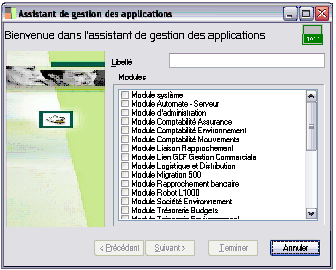
Renseignez le libellé de l’application à créer puis sélectionnez l’ensemble des modules la composant. Cliquez sur
puis sur
. Votre nouvelle application est maintenant créée.
Il est nécessaire d’initialiser un menu par défaut pour chaque nouvelle application créée. Vous pouvez ensuite modifier ce menu à l’aide de l’éditeur de menu
Le paragraphe concerna'nt le ' «Paramétrage d'un menu
», page 308' '.
Modifier une application
Modifier une application
Pour modifier une application, cliquez sur l’application en question puis choisissez la fonction «Modifier l’application» du menu contextuel.
L’assistant de gestion des applications apparaît ; le contenu de l’application sélectionnée est détaillé.
Il vous suffit de sélectionner ou désélectionner les modules composant cette application puis de cliquer sur [Terminer] puis sur [Fermer].
Charger un menu
Permet d’ouvrir un fichier contenant un menu préalablement sauvegardé.
Ces fichiers ont pour extension *.MNU.
Synchroniser les bases contenant au moins un des modules de cette application
Synchroniser les bases contenant au moins un des modules de cette application
Cette option présente l’avantage de synchroniser toutes les bases où un des modules de l’application est associé. Le processus de synchronisation est identique à celui d’une synchronisation classique.
Vous pouvez vous reporter au § ' «Synchronisation de la Base de Données
», page 137' .
Supprimer une application
Supprimer une application
Cette fonction permet de supprimer une application.
Cliquez sur l’application à supprimer puis cliquez sur la commande «Supprimer» du menu contextuel.
Confirmez la suppression en cliquant sur 
.
Il existe deux possibilités de personnalisation des menus suivant la configuration:
- soit l’utilisateur est associé à plusieurs sociétés pour une application, et dans ce cas, l’intéret est que s’il y a une modification au niveau de l’application elle sera répercutée sur toutes les sociétés associées à l’utilisateur,
- soit l’utilisateur est associé à une société mais plusieurs applications
Il est possible d’associer directement un menu à un utilisateur ou à un groupe d’utilisateurs. Les personnalisations réalisées sur ce menu seront accessibles pour l’utilisateur ou le groupe d’untilisateurs rattachés à l’application désignée et les sociétés associées. Ce menu ne sera pas visible pour les autres utilisateurs de l’application.
Les modifications du menu seront gérées en une seule fois, pour toutes les sociétés concernées.
Un simple lien relie l’utilisateur au menu défini comme menu utilisateur. Par conséquent, les personnalisations réalisées sur ce menu seront accessibles à l’ensemble des utilisateurs rattachés à l’application. Il suffit une seule fois de modifier le menu pour que la modif soit appliquée à tous les utilisateurs ou groupes d’utilisateurs et toutes les sociétés associées.
L’intéret de cette fonction est donc double:
- la modification ne sera réalisée qu’une fois dans le menu personnalisé et répercutée automatiquement pour tous les utilisateurs utilisant l’application.
- la personnalisation des menus se réalisant au niveau de l’application, elle sera visible pour toutes les sociétés associées à l’application.
Lors d’une mise à jour de l’application, vous devez :
comparer les menus à l’aide du «Comparateur des menus», page 81,
répercuter une seule fois les nouveaux éléments dans le menu personnalisé.
Procédure de personnalisation
Procédure de personnalisation
Dupliquez le menu à partir duquel vous souhaitez effectuer une personnalisation. Sélectionnez-le et affichez son menu contextuel. Cliquez sur la fonction Définir comme menu utilisateur.
Par exemple, vous dupliquez le Menu Application-GCF.
Sélectionnez le menu et cliquez sur la fonction Modifier du menu contextuel. La fenêtre de l’éditeur de menu s’affiche. Vous pouvez réaliser vos modifications.
Afin que votre menu soit lisible en Desktop et/ou en Web, n’oubliez pas de cocher les cases correspondantes dans l’onglet «Visibilité».
Etape 3 : Faire un glisser-déposer de l’utilisateur dans l’application
Pour associer un utilisateur à un menu personnalisé, vous devez faire un glisser-déposer du menu utilisateur sur un utilisateur dans une application de la société. Effectuez cette manipulation vers autant d’utilisateurs ou groupes que vous souhaitez lier au menu.
Le menu personnalisé se place dans les objets personnalisés de l’utilisateur.
Etape 4 : Définir les objets d’interface personnalisés
Cette étape permet à un utilisateur de récupérer un écran, rapport ou menu personnalisé associé à un autre utilisateur ou groupe et de l’associer. Lorsque l’utilisateur ouvrira sa société, il aura par défaut l’écran, le rapport ou le menu personnalisé.
Dans la société, effectuez un clic droit sur l’utilisateur à lier au menu personnalisé. dans la fenêtre de sélection d’un objet, choisissez le menu.
Définir le menu Portail
Le menu portail va servir à créer un portail personnalisé en tant que page d’accueil de votre application web.
Un menu portail peut être créé :
- à partir d’une application et dans ce cas, tous les utilsateurs de cette application y seront connectés,
- à partir d’une société pour l’utilisateur ou le groupe d’utilisateurs connectés.
Sur le dossier Menus, affichez le menu contextuel. Cliquez sur la fonction Créer un menu portail.
Le menu s’affiche dans l’arborescence.
Sélectionnez le menu et cliquez sur la fonction Modifier du menu contextuel. Le fenêtre d’éditeur de menu s’affiche. Vous pouvez construire le menu comme une construction de menu classique.
Pour construire un menu, reportez-vous au § «Etape 2 : Modifier le menu (déplacer les fonctions, creer des écrans, faire une entrée directe dans le menu pour certains écrans...)», page 185' .
Insérez toutes vos entrées de menu. Les entrées de menu correspondent à des groupes de flux, de vignettes, etc... Sur le menu contextuel de l’entrée, sélectionner Insérer un objet prédéfini / Menu Portail. Plusieurs types d’objets sont disponibles, notemment :
- module portail utilisateur qui permet d’insérer un peu tous les types de flux, des images, des écrans...
- module portail messagerie : toutes les boîtes auquelles l’utilisateur a droit, en fonction de ses droits
- module portail groupe de flux RSS et module portail groupe de flux indicateurs : tous les flux paramétrés dans les objets de la console.
A chaque modification du portail, l’utilisateur doit se déconnecter et se reconnecter pour que les changements soient pris en compte.
Onglet Elément
Renseigner obligatoirement le type Module portail pour que le programme comprenne et fasse le lien tout seul entre le menu et le portail. L’écran web est renseigné automatiquement en fonction du type de module.
Onglet Arguments
Les propriétés sont en général renseignées automatiquement, excepté pour l’identifiant URI qui contient le paramètre nécessaire au type de vignette.
Définir un menu mobile / Définir un menu mobile par défaut
Dans la console d’administration, dupliquez le menu, et le définir comme menu mobile par défaut. Une fois qu’il est défini comme tel, il ne peut être supprimé.
Si vous choisissez de définir un menu comme menu mobile (et non comme menu mobile par défaut), il pourra être affecté par la suite à un utilisateur comme menu mobile par défaut. Un menu mobile, non défini comme menu mobile par défaut peut être supprimé.
Procédez aux modifications :
- sur le menu défini comme menu mobile par défaut, cliquez sur la fonction Modifier du menu contextuel
- sur l’écran, affichez le menu contextuel et cliquez sur 'Insérer une entrée de menu,
- renseignez de la façon suivante :
Seul le type Menu Parent est possible : ceci permet d’ouvrir les sous menus.
Pour insérer des sous-menu, plusieurs possibilités
- sur le menu, clic droit, Créer un sous-menu puis dans la fenêtre «Elément de menu» renseigner le libellé, le type Accès à u'ne fiche DFM' ainsi que le nom de l’objet,
- sur le menu, clic droit, Créer un sous-menu , Insérer un objet prédéfini, Ecrans, Report. Dans la liste des écrans, effectuer un glisser-déposer de l’écran vers le sous-menu. Cette méthode présente l’avantage de renseigner automatiquement l’écran «Elément de menu».
Il est possible de créer un argument c’est à dire un tri. Par exemple sur une liste de clients, on peut demander au programme d’ordonner la liste.
On demande de classer les clients suivant leur code postal, par ordre numérique croissant.
Pour plus d’informations sur le paramétrage et l’utilisation des applications mobiles, consultez le Guide de personnalisation.
Menus associés
Menus associés
Une application peut utiliser un menu provenant d’une autre application. Ce menu n’existera qu’en une seule entité. Par exemple l’application Trésorerie pourra utiliser un menu Moyens de paiement mais celui appartiendra toujours à l’application Moyens de paiement. Ceci évite la duplication des menus.
Pour associer un menu à une application, sélectionnez «Menus associés» et cliquez sur la fonction Référencer des menus associés du menu contextuel. La fenêtre de sélection d’un objet s’affiche. Choisissez le menu et validez à l’aide du bouton [Ok].
Le menu sera directement présent lors de la prochaine ouverture de votre application.
Objets applicatifs
Objets applicatifs
Les objets applicatifs sont spécifiques à une application et stockés dans le référentiel. Ils bénéficient ainsi de la mécanique des objets du référentiel : patchs, mises à jour...
Sociétés
La société correspond à une entité de gestion au sens comptable du terme.
Elle est caractérisée par une ou plusieurs bases de données, de groupes de travail, d’une application ou de plusieurs et des utilisateurs pouvant y accéder.
Gestion des sociétés
Créer une architecture métier
Créer une architecture métier
Créer une architecture métier revient à créer une société, par le biais d’un assistant, avec tout ce dont elle a besoin pour fonctionner de façon optimale.
Pour créer une architecture métier, cliquez sur le dossier
Sociétés dans la partie gauche de l’écran puis sur la fonction Assistant de création/migration d’une architecture métier.. du menu contextuel.
Dans l’écran de sélection du mode d’utilisation il est possible de :
- créer une société en lui associant une architecture spécifique,
- migrer une société existante vers un nouveau modèle d’achitecture.
Créer une nouvelle architecture métier
Une architecture métier utilise une ou plusieurs sociétés. L’assistant va vous guider dans la procédure d’une solution d’architecture métier. La solution peut être se constituer à partir d’une ou plusieurs sociétés.
Sélectionnez la solution d’architecture métier (mono société ou multi-sociétés) dans la liste proposée en cliquant sur le graphique à gauche de l’écran. La partie droite résume les caractéristiques principales du déploiement correspondant. La solution choisie se marque d’un fond jaune.
Cliquez sur le bouton [Suivant].
L’écran qui s’affiche permet :
- dans la partie gauche de visualiser les éléments installés,
- dans la partie droite de dénommer la société, de définir la ou les bases de données et les applications associées et d’associer à cette société des utilisateurs ou groupes d’utilisateurs. Ces manipulations se réalisent à l’aide du menu contextuel ou par «glisser-déposer». Les assistants de création de bases de données, d’installation d’application ou d’association d’utilisateurs sont les assistants habituels dédiés à ces fonctions.
Voir les § ' «Administrer les utilisateurs et les groupes», page 118', ' «Créer une nouvelle base de données», page '126', ' «Créer une application
», page 181'.
Le bouton [Contrôler l’architecture de la société] valide la définition de la structure de la société, et vérifie que tous les éléments y figurent pour poursuivre la procédure.
L’écran suivant livre un compte-rendu des actions que le programme va exécuter.
Lorsque le traitement est terminé, cliquez sur le bouton [Terminer] pour afficher le compte-rendu final.
Migrer une société existante
Sélectionnez la société que vous souhaitez migrer pour faire apparaître la liste des solutions de déploiements compatibles d’emblée avec la société sélectionnée. Choisissez ensuite une solution d’architecture métier) dans la liste proposée. La solution choisie se marque d’un fond jaune. Pour afficher l’ensemble des patterns d’architecture métier, cochez la case Afficher l’ensemble des patterns de déploiement.Cliquez sur le bouton [Suivant].
L’écran suivant livre un compte-rendu des actions que le programme va exécuter et / ou demande les informations manquantes.
Lorsque le traitement est terminé, cliquez sur le bouton [Terminer] pour afficher le compte-rendu final.
Créer une société monobase
Créer une société monobase
Pour créer une société monobase, cliquez sur le dossier
Sociétés dans la partie gauche de l’écran puis sur la fonction Créer une société monobase du menu contextuel.
Libellé de la société
Libellé
Renseignez le libellé de la société à créer.
Applications
Vous devez également définir quelles seront les applications accessibles via cette société .
Cochez la case correspondant à la ou les applications choisies.
Cliquez ensuite sur
pour poursuivre la procédure de création.
Base de données
Sélectionnez la base de données de la société.
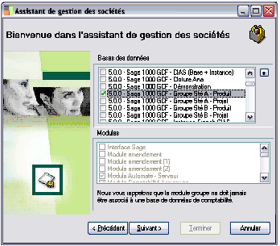
Le logiciel va directement associer aux base de données les modules correspondants aux applications sélectionnées.
Utilisateurs
Vous devez sélectionner les utilisateurs et groupes d’utilisateurs (ces derniers sont proposés en fin de liste) pouvant accéder à cette nouvelle société, par application.
Cliquez ensuite sur 
pour poursuivre la procédure de création
Paramétrage des principaux attributs
Il est possible et même conseillé d’initialiser les nouvelles bases de données avec un script de référence qui permettra d’avoir un paramétrage minimal dans ces différentes bases de données (plan comptables, devises, codes postaux…).
Cliquez sur
pour lancer la création de la société.
Si cela est nécessaire (en cas d'ajout d’application, de changement de module) et avant d’utiliser une nouvelle société, le programme vous invite à lancer une synchronisation. Elle permet d’effectuer la coordination des différentes applications constitutives d’une société avec la base de données.
Il est donc impératif de cliquer sur 
afin d’harmoniser les différents composants de la société.
Ce traitement de synchronisation peut également être lancé de la manière suivante :
Sélectionnez l’application de la société et à l’aide du menu contextuel, choisissez l’option Synchronisation.
Créer une société multi bases de données
Créer une société multi bases de données
Pour créer une société multi bases de données, cliquez sur le dossier 
Sociétés dans la partie gauche de l’écran puis sur la fonction Créer une société multibases du menu contextuel.
Libellé
Renseignez le libellé de la société à créer.
Applications
Vous devez également définir quelles seront les applications accessibles via cette société .
Cochez la case correspondant à la ou les applications choisies.
Cliquez ensuite sur
pour poursuivre la procédure de création.
Bases de données
Sélectionnez les bases de données de la société.
Le logiciel va directement associer les modules correspondants aux bases de données sélectionnées.
Vous pouvez créer une nouvelle base de données à partir du bouton
.

Vous sélectionnez alors la base par défaut et la base de transaction.
La base de données par défaut est la base principale utilisée par l’application. La base de données de transaction est la base vers laquelle sont envoyées les requêtes d’insertion, de mise à jour, de suppression, toutes les autres bases de la société doivent avoir été liées à cette base.
Utilisateurs
Vous devez sélectionner les utilisateurs et groupes d’utilisateurs (ces derniers sont proposés en fin de liste) pouvant accéder à cette nouvelle société, par application
.

Cliquez ensuite sur
pour poursuivre la procédure de création.
Paramétrage des principaux attributs
Il est possible et même conseillé d’initialiser les nouvelles bases de données avec un script de référence qui permettra d’avoir un paramétrage minimal dans ces différentes bases de données (plan comptables, devises, codes postaux…).
Cliquez sur
pour lancer la création de la société.
Si cela est nécessaire (en cas d'ajout d’application, de changement de module) et avant d’utiliser une nouvelle société, le programme vous invite à lancer une synchronisation. Elle permet d’effectuer simultanément la coordination des différentes applications constitutives d’une société avec la base de données.
Il est donc impératif de cliquer sur
afin d’harmoniser les différents composants de la société.
Synchronisation
Ce traitement de synchronisation peut également être lancé de la manière suivante :
- Sélectionnez l’application de la société et à l’aide du menu contextuel,
- choisissez l’option Synchronisation.
Cliquez sur le bouton Fermer
pour quitter l’assistant de création de société.
A propos du traitement de synchronisation
Quand faut-il lancer une synchronisation ?
Une synchronisation est nécessaire dans les cas suivants :
- Création d’une société utilisant une nouvelle base de données.
Dans ce cas, il faut lancer une synchronisation afin que la base de données puisse s’harmoniser avec les différentes applications pouvant l’utiliser.
- Mise à jour de modules, de paquets métiers dans une ou plusieurs applications.
Dans ce cas, il faut lancer une synchronisation afin que les nouveaux modules ou paquets métiers soient pris en compte par les bases de données pouvant les utiliser.
- Ajout ou création d’une application associée à une base de donnée dans une société.
Dans ce cas, il faut lancer une synchronisation afin que les bases de données soient compatibles avec l’utilisation de cette nouvelle application.
Lorsqu’une synchronisation est nécessaire, un message vous en avertit quand vous tentez de vous connecter à l’application en question.
Sélectionnez ou désélectionnez les modules composant cette application puis cliquez sur Terminer puis sur Fermer.
Quels éléments faut-il synchroniser ?
Dans tous les cas, c’est l’élément Application des sociétés qu’il faut synchroniser. Et si une société contient plusieurs applications, il convient de lancer une synchronisation par application.
La synchronisation peut être faite directement sur la ou les base de données concernées par la mise à jour d’un constituant d’une application.
Modifier une société
Pour modifier une société, cliquez sur la société en question puis choisissez la fonction «Modifier la société» du menu contextuel.
L’assistant de gestion des sociétés apparaît en détaillant le contenu de la société sélectionnée.
Le contenu de la partie droite de la fenêtre varie en fonction de la sélection faite dans la partie gauche.
Supprimer une société
Sélectionnez la société dans le dossier
Sociétés puis activez la fonction «Supprimer»du menu contextuel.
Confirmez la suppression en cliquant sur
.
La suppression d'une société annule le lien avec les applications, les bases de données, les utilisateurs et les groupes de travail.
Paramétrage d’attributs
Le format de saisie de la plupart des attributs est paramétrable ; c’est-à-dire que le logiciel vous permet de définir, par classe et par attribut, le mode de saisie d’une information.
Vous pouvez ainsi décider du mode de saisie des numéros de téléphone :
01 41 66 21 21 ou 01.41.66.21.21, etc…
Ce paramétrage peut être différent par société.
Pour accéder au paramétrage des attributs, déployez :
Le dossier Sociétés,
Le dossier de votre société de travail.
Cliquez sur «Paramétrages d’attributs» puis validez la fonction «Définir les paramétrages d’attributs» de son menu contextuel.
Si un attribut a déjà été paramétré pour la société, il apparaît dans la liste.
La barre de titre vous rappelle le nom de la société sélectionnée.
Avant toute chose, vous devez charger les classes utilisées pour l’application. Pour cela, cliquez sur le bouton
A l’issue de ce chargement, demandez la création d’une nouvelle ligne de paramétrage par le bouton .
Vous saisissez ensuite tout ou partie des informations demandées.
Choix de l’attribut
Classe
Cette zone vous permet d’indiquer la classe métier dont est issu l’attribut à paramétrer. Lorsque vous cliquez sur la zone Classe, la fenêtre suivante vous permet de sélectionner votre choix par un double clic:
Vous pouvez modifier le mode de tri de la liste des classes :

Validez votre sélection en cliquant sur le bouton ci-contre.
Attribut
Sélectionnez ensuite l’attribut à paramétrer.
Il suffit de le valider par un double clic depuis la liste des attributs de la classe :
La liste des attributs peut également être reclassée.
Longueur de saisie et justification
Longueur
Cette zone vous permet d’enregistrer la longueur totale (y compris les caractères « séparateurs » comme l’espace) de la zone de saisie de l’attribut.
Justification
Indiquez la position des éventuels caractères de remplissage si la zone n’est pas saisie dans son entier.
Caractère de justification
Indiquez le caractère de remplissage à utiliser pour la justification.
Masque de saisie
Après avoir indiqué la longueur de la zone, vous pouvez définir un masque de saisie, c’est-à-dire, précisément, la position et le type de chaque caractère à saisir.
Masque
Zone d’affichage du paramétrage du masque
Caractères pour Espace
Si vous souhaitez que la zone de saisie de l’attribut (dans l’application) indique à l’utilisateur le nombre de caractères à saisir (par exemple), indiquez ici le caractère à afficher.
Pour signifier à l’utilisateur que la zone de saisie doit contenir trois caractères, vous pouvez demander l’affichage de « --- » sur la zone de saisie en renseignant la zone Caractères pour Espace par « - ».
Enregistrer les caractères littéraux
Cochez cette zone si vous souhaitez que la zone de saisie de l’attribut (dans l’application) contienne les caractères littéraux enregistrés dans le masque.
Pour plus d'informations sur les caractères littéraux, voir le paragraphe suivant «Syntaxe de saisie d’un masque
», page 217.
Test de saisie
Vous pouvez utiliser cette zone afin de vérifier que votre paramétrage répond à vos attentes.
Syntaxe de saisie d’un masque
Les trois éléments d’un masque de saisie sont séparés par un point-virgule : 00000000;1;0
Les premiers caractères (00000000;1;0)
Le tableau suivant énumère les caractères spéciaux qui, utilisés dans un masque détermine les caractères saisissables.
| Caractère | Signification |
| L | Le caractère L rend obligatoire un caractère alphabétique à l’endroit où il est inséré. Pour la France, il s'agit des caractères A-Z et a-z et des lettres accentuées. |
| Exemple ': Une date saisie sous la forme 27 Déc 2002 correspond au masque de saisie suivant : !99 >L<LL 0000;1;_
LLL indique la position du mois sur trois caractères alphabétiques. | |
| l | Le caractère l autorise un caractère alphabétique à cette position, sans le rendre obligatoire. |
| A | Le caractère A rend obligatoire un caractère alphanumérique à cette position. Pour la France, il s'agit des caractères A-Z, a-z, 0-9 et des lettres accentuées. |
| Caractère | Signification |
| C | Le caractère C rend obligatoire un caractère quelconque à cette position. |
| c | Le caractère c autorise un caractère quelconque à cette position, sans le rendre obligatoire. |
| Exemple : L‘attribut dont le masque de saisie est ccccccccccc;1; pourra être renseigné' par les 11 caractères de votre choix. | |
| 0 | Le caractère 0 rend obligatoire un caractère numérique à cette position. |
| Exemple : L‘attribut dont le masque de saisie est 00000000;1;0 sera renseigné exclusivement par 8 caractères numériques. | |
| 9 | Le caractère 9 autorise un caractère numérique à cette position, sans le rendre obligatoire. |
| # | Le caractère # autorise un caractère numérique ainsi que les signes plus (+) et moins (-) à cette position, sans les rendre obligatoires. |
| > | Tous les caractères suivant le signe > sont en majuscules jusqu'à ce que la fin du masque soit atteinte ou qu'un caractère < soit rencontré. |
| < | Tous les caractères suivant le signe < sont en minuscules jusqu'à ce que la fin du masque soit atteinte ou qu'un caractère > soit rencontré. |
| Exemple : Toujours dans notre exemple de date saisie sous la forme 27 Déc 2002, le masque !99 >L<LL 0000;1;_
... prévoit l’affichage du premier caractère du mois (LLL) en majuscule car il est précédé de > et suivi par <. | |
| <> | Si ces deux caractères apparaissent ensemble dans un masque, aucune vérification majuscules/minuscules n'a lieu et la donnée est formatée selon les majuscules et minuscules saisies par l'utilisateur. |
| _ | Le caractère _ insère automatiquement des espaces dans le texte. L’utilisateur n’aura pas besoin de taper l’espace, il sera inséré automatiquement. |
| Caractère | Signification |
| \ | Les caractères qui suivent un caractère \ sont littéraux. Utilisez ce caractère lorsque vous souhaitez qu'un caractère spécial du masque soit repris littéralement dans la zone de saisie de l’attribut. |
| Exemple : Pour qu’un numéro de téléphone soit formaté comme suit : 01 23 45 67 89 (des espaces sép'arent chaque couple de chiffres), vous pourrez enregistrer chaque espace dans le masque de saisie : !99\ 99\ 99\ 99\ 99;0;_
… le caractère \ signalant la présente du caractère littéral. L’utilisateur n’aura pas besoin de taper l’espace, il sera inséré au'tomatiquement. Le masque suivant est équivalent : !99_99_99_99_99;0;_ Notez que si le masque indique C à la place du couple \ (\ suivi d’un espace), chaque espace sera saisi par l’utilisateur. | |
| : |
Le caractère : est utilisé pour séparer les heures, les minutes et les secondes pour les attributs de saisie des heures. Si le caractère de séparation des heures, des minutes et des secondes défini par les paramètres régionaux du Panneau de configuration de votre système est différent, ce caractère est utilisé à la place de : . |
| Exemple : Pour qu’un attribut soit renseigné par une heure dont les heures et les minutes sont séparées par : (15 :45, le masque indiquera : !90:00;1;_ | |
|
/ |
Le caractère / est utilisé pour séparer les jours, les mois et les années dans une date. Si le caractère de séparation des jours, des mois et des années défini par les paramètres régionaux du Panneau de configuration de votre système est différent, ce caractère est utilisé à la place de / . |
| Exemple : Pour qu’un attribut soit renseigné par une date affichée comme suit : 27/12/02, le masque suivant sera enregistré : !99/99/00;1;_ |
Tout caractère n'apparaissant pas dans le tableau précédent peut être utilisé dans la première partie du masque comme caractère littéral (précédé de \ )
Le caractère du milieu (00000000;1;0)
La deuxième partie du masque ne contient qu'un seul caractère indiquant s'il faut inclure les caractères littéraux du masque dans la zone de saisie de la valeur de l’attribut qui apparaîtra à l’utilisateur.
La zone Enregistrer les caractères littéraux est cochée, le masque indique 1. Si elle n’est pas cochée, le masque indique 0.
Le masque d'un numéro de téléphone peut être défini par la chaîne suivante :
(000)_000-0000;0;*
Le 0 dans la seconde partie du masque indique que la zone de saisie du numéro de téléphone ne fera pas apparaître les caractères autres que les chiffres à l’utilisateur.
Il verra : 123 545 9988 et non pas (123)_545-9988
Le dernier caractère (00000000;1;0)
Le dernier caractère du masque ne contient qu'un seul caractère : le caractère renseigné dans la zone Caractère pour Espace, qui indique à l’utilisateur le nombre de caractères à saisir pour renseigner l’attribut.
Associer des objets d’interface personnalisés
Associer des objets d’interface personnalisés
Pour associer des objets d’interface à un utilisateur, sélectionnez un utilisateur associé à une société. Ouvrez la commande Associer des objets d’interface personnalisés.
Ouvrez le dossier
Ecrans ou Rapports puis cliquez sur le ou les écrans à affecter à l’utilisateur.
Cliquez ensuite sur Ok pour valider la ou les associations.
Utiliser les préférences des utilisateurs
Sur une société donnée, sont listées à ce niveau les préférences desktop/webtop et portails existantes. Les préférences peuvent être réinitialisées en supprimant l’entrée correspondant à l’utilisateur choisi.
La fonction Préférences des utilisateurs / Portails permet d’attribuer un portail déjà existant à tous les utilisateurs d’une application.
Pour cela vous devez ouvrir le menu contextuel du dossier Préférences des utilisateurs / Portails et vous positionner sur l’utilisateur dont le paramétrage du portail est défini.
Quatre options sont proposées :
- définir ce portail comme portail par défaut en mode hors connexion,
- définir ce portail comme portail par défaut lorsque l’utilisateur est connecté à l’application web,
- consulter le script du portail utilisateur,
- supprimer l’association portail-utilisateur.
Dans le cas où vous choisissez une des deux premières options, le programme copie le script du portail au niveau de l’application. Ainsi, si l’utilisateur premier du portail est supprimé dans les Préférences des utilisateurs, le portail continuera à fonctionner.
Le menu portail est maintenant défini au niveau de l’application.
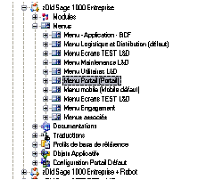
Vous pouvez consulter la documentation sur le Portail dans le Guide de personnalisation pour insérer vos flux et vignettes.
'e-services SAG'E
La fonction e-services SAGE permet de contrôler la bonne tenue financière de vos tiers :
- vous placez sous surveillance les tiers enregistrés dans votre logiciel Sage,
- le système intègre automatiquement et de manière transparente, dans votre logiciel Sage, des informations concernant la santé financière de vos partenaires à partir d’une base de données gérée par le Groupe Coface,
- vous recevez des alertes par e-mail dès qu’une des données concernant la santé financière des entreprises placées sous surveillance a été modifiée. Vous êtes ainsi assuré de la pertinence et de la validité des informations concernant vos partenaires our un coût d’acquisition et de mise à jour très faible.
Par ailleurs, une fonction de recherche d’adresse permet de trouver les coordonnées d’une entreprise et de les mettre à jour automatiquement dans la ligne 1000.
Souscription de l’abonnement : le ticket
Pour cela, vous pouvez souscrire un abonnement. Sage vous communique alors un code utilisateur et un mot de passe vous permettant de vous identifier.
Pour enregistrer ces éléments dans la Ligne 1000 :
Cliquez sur e-services SAGE,
Puis sur le bouton droit de la souris,
Validez la fonction Insérer des éléments...
La fenêtre «Contrats Sage e-services» vous permet alors d’enregistrer les informations communiquées par Sage afin de vous identifier :
- Code utilisateur,
- Mot de passe,
- Dates d’abonnement.
Validez votre saisie par le bouton Ok.
Dès lors, l’application possède les éléments permettant de vous identifier sur le portail Sage. Au moment où vous vous connecterez à une application Ligne 1000, son code produit sera automatiquement créé dans la fenêtre «Contrats Sage e-services».
Lors du prochain démarrage d’une application Ligne 1000, les fonctions de e-services seront accessibles dans le menu Aide ou depuis les fichiers Tiers.
https://frp.sage.fr/wiki1000/medias/images/prise_en_main/image236.pngLe bouton Obtenir le ticket permet de rafraîchir les informations de connexion auprès du portail au cas où, par exemple, l’adresse internet du serveur serait modifiée.
Serveurs Automates
Le dossier https://frp.sage.fr/wiki1000/medias/images/prise_en_main/image237.png' Serveurs Automates' permet de gérer les postes ou services, dédiés à l’exécution des automates. Il existe deux types de serveurs :
{kind=link}
- les serveurs d’automates par un poste Client / Serveur dédié,
- les serveurs d’automates par un service Ligne 1000.
Administration des serveurs d’automates par un poste dédié
Un serveur d’automates par un poste dédié est déclaré par l’utilisateur et doit être démarré manuellement sur le poste.
Création d’un serveur externe
Création d’un serveur externe
Pour créer un serveur externe, ouvrez le dossier 'Serveurs Automates / Serveurs Desktop puis son menu contextuel et activez la fonction Créer un serveur. Un assistant va vous guider dans la création de votre serveur.
Nom
Indiquez le nom du serveur.
Description
Titre du serveur.
Active
Si le serveur est actif (cette zone est cochée) dès la prochaine manipulation, il sera en service.
Poste
Nom du poste client.
N° port
Il s’agit du nom du point d’entrée du serveur sur votre machine. La paire Poste/Port doit être unique pour chaque serveur.
Cliquez sur Suivant pour passer à l’écran de sélection des applications.

Validez votre choix en cliquant sur le bouton Suivant.
Vous pouvez maintenant associer un ou plusieurs utilisateurs à votre serveurs.
Si vous avez sélectionné plusieurs applications vous accédez à l’écran de fusion et reconstruction des dictionnaires. Sinon, Cliquez sur le bouton Terminer pour lancer l’enregistrement de votre serveur d’automates.
Cochez la case pour que les dictionnaires soient mis à jour après une mise à jour du produit.Votre serveur est créé.
Gestion des serveurs
Gestion des serveurs
Pour accéder à la liste des serveurs locaux existants,
déployez la fonction Voir du noeud Serveurs Automates / Serveurs Desktop / «Nom du serveur» / Automates.
Chaque serveur est associé à un utilisateur et une application.
L’écran de gestion des automates est soumis aux boutons suivants :
ferme l’écran.
enregistre les modifications apportées dans l’écran.
supprime les dernières modifications réalisées dans l’écran.
rafraichit l’écran si vous avez réalisé des modifications, en dehors de l’écran déjà ouvert.
Le contenu de cette fenêtre se modifie selon le dossier sélectionné. Quatre dossiers sont disponibles.
- Le dossier «Général» affiche les propriétés du serveur sélectionné dans la Console d’administration. Cet écran récapitule :
- Le nom du serveur,
- Le détail sur le type de serveur,
- Le nom du poste de travail où s’exécute le serveur,
- Le numéro du port TCP/IP où le serveur attend les informations,
- L’état du serveur : Activé ou Désactivé..
Le numéro du port ne doit pas être en conflit avec un autre service TCP/IP du poste.
- Le dossier «Journal» affiche la liste des « connexions » générées pour chaque serveur.
Cette liste récapitule pour chaque log, dans le panel supérieur de l’onglet :
- La date de son exécution,
- Le message associé,
- Le code retour reçu après exécution,
- Le descriptif du traitement effectué.
Chaque exécuTion d’un traitement génère un « log » dans le journal du serveur.
Le panel inférieur affiche les messages du journal des connexions.
- Le dossier «Automate» affiche la liste des automates paramétrés pour chaque serveur. Cette liste récapitule pour chaque automate sélectionné :
- la mention Etat courant ,
- renseigne sur l’état de l’automate après exécution des tâche,
- la mention Suspendu si l’utilisateur a demandé l’interruption de l’automate lorsqu’il atteint l’état final,
- le détail sur le type d’automate.
- Le dossier «Evènements» donne la liste des évènements existants sur le serveur et permet la création de nouveaux évènements. La grille indique pour chaque évènement :
- le type d’évènement, qui peut être un évènement immédiat, un évènement déclenché par l’apparition ou mise à jour d’un fichier ou un évènement de type temporel,
- le détail sur le type d’évènement,
- la date de l’éxécution,
- la date d’arrêt de l’exécution.
Pour plus de détails sur le fonctionnement de l’automate, reportez-vous au manuel Automates de traitements.
Modification / Suppression d’un serveur d’automate
Modification / Suppression d’un serveur d’automate
Pour modifier les différents paramètres associés à un automate, sélectionnez la commande Modifier du menu contextuel du serveur.
L’assistant de gestion des serveurs d’automate va vous guider dans la modification des paramètres originaux.
Vous pouvez vous reporter au § «Création d’un serveur externe», page 229' concernant l’assistant de création des serveurs d’automates.
Pour supprimer un serveur d’automate, sélectionnez la commande Supprimer du menu contextuel du serveur.
Affectation d’un serveur d’automate
Affectation d’un serveur d’automate
Un serveur d’automates doit être associé à un utilisateur ou groupe d’utilisateurs susceptible d’exécuter des tâches différées. Cette association peut être réalisée à différents niveaux :
- au niveau de l’application dans une société, vous pouvez associer tous les utilisateurs de l’application à un automate privilégié (Sociétés/nom de la société/Préférences des utilisateurs/Aucun serveur automate défini/Définir comme serveur automate privilégié/nom du serveur).
- au niveau d’un groupe d’utilisateurs dans une société, vous pouvez associer un groupe d’utilisateurs à un automate privilégié (Sociétés/nom de la société/nom de l’application/nom du groupe/Aucun serveur automate défini/Définir comme serveur automate privilégié/nom du serveur).
- au niveau d’un utilisateur dans une société, vous pouvez associer un seul utilisateur à un automate privilégié (Sociétés/nom de la société/nom de l’application/nom de l’utilisateur/Aucun serveur automate défini/Définir comme serveur automate privilégié/nom du serveur).
Vous définissez de cette façon le serveur d’impression. Un menu propose les différents serveurs auxquels vous avez accès.Le serveur peut être un serveur dédié ou un serveur service.L’impression immédiate ou différée sera déterminée par le menu Impression de l’écran sur lequel vous vous trouverez.
Pour plus de détails sur les commandes accessibles par les menus contextuels des groupes d’utilisateurs, d’utilisateurs ou applications vous pouvez consulter les § «
Associer des objets d’interface personnalisés», page 220 , «Gestion d’un profil de droits», page 270 , «Synchronisation de la Base de Données
», page 137 , «Expert / Inverser le statut de synchronisation», page 141 .
Administration des serveurs d’automates par un service Ligne 1000
Chaque service Ligne 1000 exécute automatiquement un serveur d’automate dont le nom du serveur est le nom du service. Les serveurs s’enregistrent instantanément au démarrage du service.
Les fonctions disponibles sont identiques à celles d’un serveur externe.
Web Services
Les fichiers générés par l’application Sage 1000 Banque Paiement sont envoyés au logiciel de communacation bancaire. Pour cela il est nécessaire de paramétrer un alias d’adresse afin d’établir le lien entre les deux logiciels.
Les alias d’adresse sont paramétrés ici. Les alias sont créés automatiquement, mais la zone Adresse de remplacement sera vide. Cette zone devra être renseignée lors de l’installation de l’outil de communication bancaire.
Sécurité
Ce dossier Sécurité permet de gérer les droits des utilisateurs et des groupes sur les différentes applications installées. Il se décompose comme suit :
Le dossier sécurité propose :
- Clés d’authenticité : la saisie et le contrôle des clés d’authenticité saisies,
- Certificats : l’identification de l’auteur d’un développement,
- Rôles : le paramétrage de rôles (ou profils) utilisateurs,
- Droits : un aperçu des droits des utilisateurs (les actions autorisées ou interdites) sur un objet,
- 'Pro'fils de droit : l’association d’un ensemble de droits,
- Traces : un aperçu des traces des utilisateurs (les actions effectuées).
Clé d’authenticité et code d’accès
Clé d’authenticité et code d’accès
Après l’installation du logiciel, la Clé d’authenticité doit être saisie pour permettre son utilisation. Unique, elle définit vos droits sur l’application associée.
Cette Clé vous a été communiquée avec votre logiciel, sur votre Certificat d’authenticité.
Après la saisie de la Clé d’authenticité, vous pouvez utiliser cette application 99 fois.
Après référencement auprès du service Licence de Sage, la saisie du Code d’accès définitif fourni vous permet de débloquer ce nombre de démarrage autorisés.
Saisie de la clé d’authenticité
Pour saisir votre Clé d’authenticité, ouvrez le dossier Sécurité puis affichez le menu contextuel
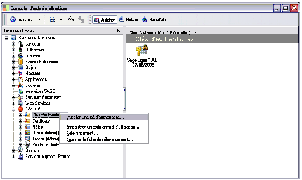
Activez la fonction «Installer une clé d’authenticité…» puis renseignez la fenêtre affichée :
Saisie du code annuel d’utilisation
Si vous n’avez pas encore saisi votre code d’accès, lorsque vous démarrez le logiciel, une fenêtre vous indique le nombre d’accès résiduels dont vous disposez.
Un code annuel d’utilisation vous a été communiqué par SAGE France en réponse à votre référencement.
Pour saisir votre Code annuel d’utilisation, ouvrez le dossier Sécurité/ Clés d’authenticité puis son menu contextuel et activez la fonction Enregistrer un code annuel d’utilisa'tion :
Référencement
Le Référencement vous permet de vous identifier auprès de nos services afin de recevoir votre Code d’accès.
Ce référencement peut s’effectuer :
- soit via Internet,
- soit par courrier ou télécopie.
Par Internet
Pour demander votre référencement par Internet, ouvrez le dossier Sécurité puis affichez le menu contextuel et activez la fonction «Référencement…»
La sélection de cette fonction lance le programme de navigation disponible sur votre poste et vous permet d’envoyer les informations d’identification vous concernant.
Par courrier ou télécopie
Pour demander votre référencement par courrier ou télécopie, ouvrez le dossier Sécurité puis affichez le menu contextuel et activez la fonction «Imprimer la fiche de référence».
Certificats
Certificats
Un certificat permet de s’assurer des droits sur l’utilisation d’un développement.
Il est nécessaire pour installer et créer des paquets métiers. Une clé authentifie le certificat et est utilisée pour chaque exportation.
Pour créer un certificat, vous devez sélectionner la commande «Gestion des certificats d’auteur».
Gestion des certificats d’auteur
Cette option vous permet d’:
- ajouter un certificat,
- exporter un certificat,
- 'importer un certificat'.
Onglet Ajout d’un certificat
Auteur
Renseignez le nom de l’auteur du paquet.
Clé publique
Cette clé authentifie un développement. Elle sera partagée par l’auteur et le destinataire.
Clé privée
Cette clé assure à l’auteur la protection d’un développement. Elle sera connue de lui seul.
Validation
Saisissez à nouveau la clé privée.
Vous cliquez sur
afin de valider votre certificat.
Onglet Exporter un certificat
Dans l’onglet «Exporter un certificat», vous renseignez le nom du certificat à exporter puis vous saisissez la clé privée ou utilisez le sceau client.
Voir le paragraphe ' «Déterminer le sceau client
», page 248' pour plus de détails sur le sceau client.
Cet onglet n’apparaît pas dans la version destinée au client
Cliquez sur le bouton
afin de valider l’exportation du certificat.
Onglet Importer un certificat
Dans l’onglet «Importer un certificat», vous renseignez l’origine du certificat à importer à l’aide du bouton puis vous saisissez la clé privée ou utilisez le sceau client.
Cliquez sur le bouton
Importer afin de valider l’importation du certificat.
Déterminer le sceau client
Le sceau client est un code identifiant le client. Il est utilisé pour transférer un certificat d’auteur d’une base master à une autre uniquement sur un même site client.
Il est donné lorsque vous sélectionnez la commande «Déterminer le sceau client».
Cliquez sur 
afin de valider le sceau créé.
Supprimer le sceau client
Cette commande permet, le cas échéant, de supprimer le certificat sélectionné.
Gestion des rôles
Gestion des rôles
Définition d’un rôle
Un rôle peut être assimilé à un profil utilisateur. Il regroupe un ensemble d’actions et de droits qui lui sont autorisés. Un rôle est ensuite affecté à un utilisateur ou un groupe d’utilisateurs.
Ouvrez le dossier
Sécurité puis le menu contextuel (par le bouton droit de la souris) de l’icône
Rôles.
Vous constatez que le programme distingue deux types de rôles :
- Les rôles de conception : ils permettent de modifier la structure des applications Ligne 1000 ; ce sont des droits supplémentaires qui concernent l’organisation de l’application, les paramètres qui détermine la logique de fonctionnement du programme ; utilisé sans contrôle, un rôle de conception peu avoir des incidences sur le bon fonctionnement du programme :
Il peut s’agir de droits d’entrée dans une fonction :
- droit d’entrée dans le concepteur de modèle
- droit d’entrée dans l’éditeur de documentation
Il peut s’agir de droits de modification :
- droit de modifier la structure des classes persistantes des projets publiés,
- droit de modifier le code des classes persistantes des projets publiés,
- modifier la structure des classes persistantes des projets non publiés,
- modifier le code des classes persistantes des projets non publiés,
- modifier la documentation des projets publiés,
- modifier la documentation des projets non publiés.
- Les rôles d’exécution : ils permettent de modifier l’environnement de travail des utilisateurs de la Ligne 1000 :
Il peut s’agir d’interdictions :
- de créer des écrans,
- de créer des requêtes,
- de modifier des écrans,
- de modifier des requêtes,
- de personnaliser la barre d’outils.
Il peut s’agir de restrictions :
- d’exécuter le dialogue d’ouverture des écrans,
- d’exécuter le dialogue d’ouverture des requêtes.
Il peut s’agir de droits supplémentaires, orientés administrateur :
- de créer des droits dans l’application,
- de créer des traces dans l’application.
Créer un rôle
Pour créer un nouveau rôle, sélectionnez l’une des commandes proposées dans le menu contextuel :
- Ajouter un rôle de conception,
- Ajouter un rôle d’exécution.
Le principe de création est le même dans les deux cas.
Paramétrage du rôle
Dans l’onglet «Droits et interdictions», vous renseignez le nom et le libellé du rôle à créer puis vous sélectionnez les actions à autoriser pour ce rôle dans la liste proposée.
Utilisateurs concernés
Dans l’onglet «Utilisateurs», vous sélectionnez les utilisateurs qui se verront attribuer ce rôle.
Groupes concernés
Si vous souhaitez sélectionner plusieurs utilisateurs appartenant à un même groupe, vous pouvez utiliser l’onglet «Groupes».

Aperçu du résultat dans la console
Dans la console d’administration, le nouveau rôle créé apparaît sous forme de dossier, ce dossier contenant lui-même les utilisateurs et/ou groupes d’utilisateurs sélectionnés :
La barre de titre de la fenêtre rappelle l’intitulé de la classe et le groupe ou l’utilisateur sélectionné.
Modifier un rôle
Pour modifier un rôle, sélectionnez son intitulé puis choisissez la commande «Modifier» du menu contextuel. Faites les modifications nécessaires puis cliquez sur Ok.
Supprimer un rôle
Sélectionnez le rôle dans le dossier
Rôles puis activez la fonction «Supprimer» du menu contextuel. Confirmez la suppression en cliquant sur
.
Un rôle ne peut être supprimé que si aucun utilisateur ou groupe d’utilisateurs ne lui est affecté.
Gestion des droits
Gestion des droits
Le programme permet de définir des droits pour un utilisateur ou un groupe d'utilisateurs sur les classes, les attributs et les méthodes, ou pour une application en particulier.
Les droits sont restrictifs : par défaut, un utilisateur a tous les droits ; pour restreindre son champ d’action, vous lui associez un droit.
On distingue cinq types de droits :
- consultation, sur les classes ou les attributs
modification, sur les classes ou les attributs
- création, sur les classes
- suppression, sur les classes
- exécution, sur les méthodes.
- C
Les droits peuvent être conditionnés par une expression.
Le dossier Droits du dossier Sécurité donne un aperçu des droits par utilisateur.
Ces droits sont définis par objet métier ou objet interface, pour un utilisateur ou pour un groupe d’utilisateurs.
C
Créer un droit
Un droit peut être défini pour un utilisateur ou un groupe d’utilisateurs et peuvent s’appliquer :
- à une application (pour une société),
- à une classe d’objet métier ou interface,
- à un attribut.
Pour un objet
Pour définir un droit sur un objet particulier, déployez les dossiers :
Objets
puis Métiers ou Interfaces,
…. en fonction du domaine d’application du droit que vous souhaitez définir.
Déployez ensuite successivement :
Le métier qui vous intéresse
Le dossier Classes
La classe pour laquelle vous souhaitez définir des droits.
Sélectionnez le dossier Droits puis affichez son menu contextuel pour choisir l’utilisateur concerné.
Pour une société
Pour définir les droits d’un utilisateur sur une classe, pour une application et une société données, déployez successivement les dossiers :
Objets
Métiers
Le métier qui vous intéresse
Classes
Vous sélectionnez la classe pour laquelle vous souhaitez définir des droits et, sans relâcher le bouton de la souris, vous glissez son icône sur le dossier Droits contenu dans le dossier :
Sociétés
Le dossier de la société de travail
Le dossier de l’application utilisée
Le dossier de l’utilisateur
Lorsque vous relâchez la souris, la fenêtre de paramétrage du droit apparaît. Sa barre de titre rappelle :
Droits sur la classe [Classe] associé à [Utilisateur] [Nom de l’application].
Pour définir les droits d’un utilisateur sur la classe Compte général, ouvrez successivement les dossiers :
Objets
Métiers
[Objet dyn.] – Métier Environnement comptable
Classes
Vous cliquez sur la classe Compte général et, sans relâcher le bouton de la souris, vous le glissez sur le dossier Droits de :
Sociétés
Le dossier de la société de travail (Société Compta Projets)
Le dossier de l’Application utilisée (Comptabilité générale & financière)
Le dossier de l’utilisateur
Pour un attribut
L’enregistrement d’un droit sur un attribut peut également s’effectuer à partir des écrans des applications. L’accès au paramétrage des droits se fait par la combinaison de touches Ctrl et F8.
Pour y accéder, refermez la Console d’administration et ouvrez une application.
Affichez la fenêtre de l’application contenant l’attribut sur lequel vous souhaitez enregistrer des droits, puis tapez simultanément les touches Ctrl et F8.
La fenêtre «Définition des droits sur la classe» [nom de la classe] se superpose à la fenêtre initiale :
Par exemple, pour l’application Sage 1000 Gestion Comptable et Financière, vous souhaitez définir un droit sur l’attribut Nature du journal (natureJournal) :
validez la fonction Paramètres / Comptabilité Générale / Journaux Comptables
tapez Ctrl et F8
cliquez sur l’emplacement de l’attribut « natureJournal »
.
Utilisateurs concernés
Le menu contextuel vous propose d’enregistrer un droit pour un utilisateur ou un groupe d’utilisateurs.
Une fois votre choix effectué, la fenêtre de paramétrage du droit apparaît.
Paramétrage d’un droit
Cliquez sur l’onglet correspondant au champ d’application du droit : les classes, les attributs ou les méthodes.

Cliquez ensuite sur le bouton d’insertion pour afficher la fenêtre de paramétrage.
Cette fenêtre se décompose en trois parties :
- les restrictions : cet encadré liste des actions interdites qui, si elles sont cochées, seront associées au droit ;
- les conditions : ce sont les conditions d’application des interdictions ;
- les options : qui permettent de préciser le champ d’application du droit.
Restrictions d’un droit sur les Classes
Cochez, parmi les choix proposés les restrictions à associer au droit :
- Interdiction de consulter une classe
- Interdiction de modifier dans une classe
- Interdiction de créer dans une classe
- Interdiction de supprimer dans une classe
- Interdiction d’exécuter les méthodes publiées d’une classe
Droits sur la classe Ecriture comptable.
Si vous cochez « Interdiction de créer dans une classe », la création d’une écriture comptable refusée aux utilisateurs concernés.
Restrictions d’un droit sur les Attributs
Attribut
Nom de l’attribut
Vous sélectionnez l’attribut pour lequel vous souhaitez définir un droit.
Sélectionnez l’attribut par un double-clic.
Restrictions
Cochez les restrictions à associer au droit, sur cet attribut :
- Interdiction de consulter un attribut
- Interdiction de modifier un attribut
Droits sur l’attribut En activité de la classe Compte général.
Si vous cochez « Interdiction de modifier un attribut », cette caractéristique ne sera pas modifiable pour les utilisateurs associés à ce droit.
Restrictions d’un droit sur les Méthodes
Méthode
Nom de la méthode
Vous sélectionnez, sur la liste déroulante, la méthode pour laquelle vous souhaitez définir un droit.
Restrictions
Exécuter une méthode
Cochez cette zone pour que l’exécution de la méthode sélectionnée soit interdite.
Droits sur la méthode Créer répartition périodique de la classe Ecriture comptable.
Si vous cochez « Exécuter une méthode », cette opération ne pourra pas être exécutée par les utilisateurs associés à ce droit.
Conditions
Des conditions d’application peuvent être associées au droit.
Si une ou plusieurs conditions sont enregistrées, le droit ne sera appliqué que si elle(s) est (sont) remplie(s).
Cliquez sur le bouton Modifier pour afficher la fenêtre de saisie de la condition.
Pour tout renseignement sur l’Editeur de filtre, reportez-vous au manuel Designer d’écrans.
Options
'Si le droit est défini depuis la 'Console d’administration, seule la zone Actif est accessible. Les autres options peuvent être paramétrées lorsque le droit est défini depuis une application, par la combinaison de touches Ctrl+F8
Les options suivantes peuvent être associées à une interdiction :
Appliquer sur l’objet / Libellé
Si vous cochez la zone Appliquer sur l’objet, la zone Libellé vous permet de sélectionner l’intitulé d’un objet précis de la classe.
Vous définissez les droits d’un utilisateur pour l’attribut En activité de la classe Compte général.
Vous pouvez demander l’interdiction de modifier l’attribut appliqué sur l’objet Clients Ventes export.
Il sera alors impossible pour l’utilisateur de modifier la zone En activité du compte Clients Ventes export.
Généralisable (lecture seulement)
Si cette zone est cochée, le droit est automatiquement généralisé par le programme à toutes les classes référençant la classe pour laquelle le droit est défini.
L’interdiction de consulter une classe peut être généralisé.
Actif
Cette zone vous permet de rendre le droit momentanément inactif. Les restrictions qui lui sont associées ne sont alors plus appliquées.
Modifier un droit
Pour modifier un droit, sélectionnez son intitulé puis choisissez la commande Modifier du menu contextuel.
Un droit peut être modifié depuis le dossier Objets :
… ou depuis le dossier Sécurité :
Supprimer un droit
Pour supprimer un droit, vous appelez sa fenêtre de paramétrage par la fonction Modifier du menu contextuel …
… puis, pour chaque condition enregistrée :
vous sélectionnez sa ligne,
puis vous cliquez sur le bouton de suppression.
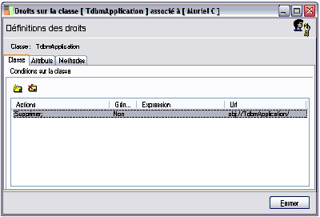
Le programme affiche un message avant d’entériner la suppression.
Cliquez sur le bouton OK pour confirmer la suppression.
Profils de droits
Profils de droits
La gestion des profils de droits a pour objectif d’associer un ensemble de droits ayant une finalité fonctionnelle ou un ensemble de paramètres communs. Ces profils définissent des cadres de droits et permettent d’associer des valeurs de données à des paramètres d’expression de droits.
Le programme Sage 1000 livre un panel de profils définis.
Comme pour les droits, les profils de droits sont restrictifs. Par défaut les utilisateurs ont tous les droits.
Les interdictions sont de cinq types :
- Consultation sur les classes ou les attributs,
- Modification sur les classes ou les attributs,
- Création sur les classes,
- Suppression sur les classes,
- Exécution sur les méthodes.
Les droits définis dans les profils de droits peuvent être conditionnés par une expression.
Gestion d’un profil de droits
Un profil est défini par l’intégration d’un ensemble de droits portant sur une classe. Ce profil est ensuite associé à un utilisateur ou un groupe d’utilisateurs.
'Pour définir un profil déployez les dossiers 'Sécurité / Profils de droits.
Effectuez un clic droit sur le dossier Profils de droits et ouvrez la fonction Gestion des profils de droits.
Vous pouvez également accéder à la fonction Gestion des profils de droits par le dossier Utilisateurs / Nom de l’utilisateur / Gestion des profils de droits pour cette association.
Onglet Profil
Un profil de droits est défini par
- Un libellé,
- Des statuts,
- Une description,
- Des paramètres.
Les statuts
Génération xml sauvegardée en base master
Ce statut indique si la génération xml a été sauvegardée en base master.
Génération xml en phase
Ce statut précise si la génération xml des droits en base master est en phase avec l’ensemble des droits et des modifications apportés au profil.
En production
Cette case cochée indique que le profil est prêt à être exporté et installé. Avec ce statut, c’est uniquement le descripteur xml des droits qui est utilisé et non les droits associés au profil.
Profil actif pour l’association
Ce statut indique lors de l’association du profil à un utilisateur ou à un groupe si le profil est actif ou non.
Les paramètres
Si les droits associés au profil intègrent des expressions contenant des paramètres, l’ensemble de ces paramètres est repris dans le profil. Il est possible par cette option de réinitialiser l’ensemble de ces paramètres.
Une fois le ou les profils finalisés, ce bouton autorise l’enregistrement du ou des profils.
Gestion des paramètres
Vous pouvez appliquer un paramètre fixe ou lui donner une valeur saisie lors de l’application du profil à un utilisateur.
Vous pouvez consulter le § «Association d’un profil à un utilisateur, un groupe ou une application», page 278' pour l’association d’un profil à un utilisateur.
En indiquant dans les expressions de droits un paramètre identique, cela permettra d’avoir une seule occurence et de répercuter la valeur associée d’une manière unique sur l’ensemble des droits contenant ce paramètre.
Après l’initialisation de la liste des paramètres, le paramètre des droits du profil est repris dans la liste des paramètres du profil.
Onglet Droits sur la classe
L’onglet «Droits sur la classe» affiche le détail des droits sur une classe sélectionnée.

Cliquez sur l’onglet correspondant au champ d’application du droit : la classe, les attributs et les méthodes pour afficher les informations relatives aux droits.
Les types et interdictions, expressions et paramètres correspondants aux droits sélectionnés peuvent être également consultés. Il est imposible de modifier les valeurs affichées dans cet écran.
Pour modifier un droit, vous devez utiliser la fonction Ajouter, Modifier les droits sur cette classe détaillée dans le § «Gestion des droits
», page 254' .
Création d’un profil de droits
La fenêtre «Gestion des profils de droits» affichée, positionnez vous sur la liste des profils et affichez le menu contextuel.
L’option «Ajouter un profil» permet la création d’un profil de droits dans le référentiel.
Cliquez sur la fonction, un profil se créé automatiquement en bas de la liste.
Renseignez le libellé ainsi que la description du profil.
Ouvrez la fonction «Ajouter une classe» du menu contextuel ou cliquez sur le bouton ci dessus.
Définissez les droits sur la classe ou sur ses attributs en déterminant le cas échéant les expressions conditionnant l’application du droit. Cette définition des droits s’effectue par l’option «Ajouter, Modifier les droits de cette classe».
Pour l’affectation, la modification ou Suppression de droits sur une classe ou des attributs, reportez-vous au § ' «Gestion des droits
», page 254' .
Enregistrez votre profil en cliquant sur le bouton «Sauvegarder en base master».
Supprimer ce profil
Appelez cette fonction via le menu contextuel. Un message de confirmation de la suppression apparait.

Validez en cliquant sur Oui.
Dupliquer ce profil
Vous pouvez dupliquer un profil en cliquant sur la commande Dupliquer un profil.
Génération xml des droits
Cette option génère un descripteur xml des droits associés. Elle permet d’enregistrer l’ensemble des droits associés au profil dans un format exportable.
Sauvegarder le descripteur xml du profil
Cette fonction permet de sauvegarder physiquement le profil de droits en vue de son installation dans une autre base. Deux fichiers sont créés :
- le profil xml,
- le descripteur du profil, qui servira à l’installation du profil.
Ajouter des droits sur le modèle des droits existant
Cette option vous permet de créer des droits associés au profil actif sur le modèle des droits utilisateurs ou groupe utilisateurs existants.
Sélectionnez un profil et appelez la fenêtre «Droits définis» par l’option Ajouter des droits sur le modèle des droits existants.
Sélectionnez le droit et validez par Ok.
Le droit sera récupéré pour le profil choisi.
Installation d’un profil
Pour être exporté et installé le profil doit requérir les conditions suivantes :
- le descripteur xml doit être généré,
- le statut doit être mis «En production».
L’installation et la mise à jour des profils se fait lors de l’installation et la mise à jour des applications. Vous pouvez néammoins installer un profil enregistré via l’option «Sauvegarder le descripteur xml du profil».
Effectuez un clic droit sur le dossier Profils de droits et ouvrez la fonction Installer un profil de droits.
Sélectionnez le profil (Descripteur / ....xml) à installer dans la fenêtre classique de sélection et cliquez sur Ok.
Association d’un profil à un utilisateur, un groupe ou une application
L’association peut s’effectuer :
- Par un glisser-déposer d’un profil vers un destinataire,
- Par association dans la fenêtre de propriétés du destinataire du profil.
Si vous souhaitez associer un profil à un utilsateur :
Cliquez sur la fonction Modifier du menu contextuel de l’utilisateur concerné,
Ouvrez l’onglet «Profils de droits»,

Cliquez sur le bouton ci-contre et choisissez le profil par un double-clic. Fermez la fenêtre de sélection.
Validez par Ok.
Pour renseigner la valeur des paramètres d’un profil, ouvrez la fonction Gérer les pr'ofils de droits pour cette association.
Renseignez les valeurs des paramètres du ou des profils associés. Les valeurs saisies remplaceront dans chacune des expressions les paramètres définis au préalable.
Enregistrez les modifications par le bouton Sauvegarder en base master.
Exécution et mise à jour
Lors de l’entrée dans une application, les profils associés à l’utilisateur ou au groupe dans une application sont chargés. Les droits affectés aux profils sont créés ainsi que le remplacement des paramètres d’expression définis par les valeurs saisies lors de l’association du profil.
Lors de la mise à jour d’une application, les profils de droits seront mis à jour comme n’importe quel objet.
S’ ils ont subi une modification, ils seront écrasés. Il est donc conseillé d’effectuer au préalable une copie d’un profil.
==='Services support-Patchs'===
Ce dossier Services support-Patchs permet la mise en place d’améliorations et de correctifs sans obligation de déploiement ou d’installation de versions complètes.
Rappels :
Un service patch est un ensemble de patchs.
Un patch réalise une seule opération de correction, modification ou développement. Il est composé d’un ou plusieurs éléments.
Un élément de patch réalise une opération unitaire, par exemple la mise à jour d’un écran.
Le dossier Services support-Patchs propose :
- d’Installer un Service Patch,
- d’Installer un Patch.
Installer un Service Patch
L’installation d’un service patch entraînera l’installation de tous les patchs qui le compose.
Si certains de ces patchs ont déjà été installé de manière autonome, ils ne seront pas ré-installés.
Installer un service patch ou un patch ne l’applique pas. L’installation d’un patch a pour seul but d’enregistrer dans la base master les fichiers de patchs et leur description. Vous devez appliquer les actions contenues dans les patchs.
Sélectionnez la fonction «Installer un Service Patch», une fenêtre vous permettant d’importer le fichier à charger s’affiche :
Un message de confirmation ou d’erreur signale le succès ou non du chargement des services patchs.
Appliquer un Service Patch
Sélectionnez le patch à appliquer parmi la liste des patchs chargés.
Vous trouverez toutes les caractéristiques des services de patchs ou des patchs dans la partie droite de l’écran. Ces caractéristiques ne peuvent être modifiées.
Effectuez un clic droit sur le service patch sélectionné et activez l’option «Appliquer le service patch».
Un message de confirmation ou d’erreur signale le succès ou non de l’application du service patch.
Installer un Patch
La procédure d’installation d’un patch est identique à celle d’un service patch.
Vous pouvez vous reporter au § ' «Installer un Service Patch
», page 281' .
Appliquer un Patch
Appliquer un Patch
La procédure d’application d’un patch est identique à celle d’un service patch, page.
Une fois les patchs appliqués, ils prennent un statut différent.
Si un patch dépend d’un autre patch, lors de l’application du patch maitre, le patch dépendant sera appliqué s’il ne l’a pas déjà été.
L’application de certains patchs contenant des éléments nécessitant une synchronisation des bases de données entrainera la mise au statut « à synchroniser » des bases de données concernées.C
Annulation d’un patch
Annulation d’un patch
Sélectionnez le patch à annuler et activez la fonction «Annuler ce patch» à l’aide du menu contextuel.
Un message de confirmation ou d’erreur signale le succès ou non de annulation du patch.
L’annulation d’un patch contenant des dépendances n’entraîne pas l’annulation de ces dépendances. En effet, ces dernières, si elles ont été appliquées, peuvent être les dépendances d’autres patchs.
Si un patch est référencé par d’autres patchs en tant que dépendance, son annulation sera impossible si ces patchs sont déjà appliqués.
Une fois le patch d’annulation appliqué, le patch annulé devient invalide, son statut change et il est impossible de l’appliquer.
Un patch annulé est marqué d’une croix rouge.
Si l’annulation concerne un patch d’annulation, les actions des patchs annulés par ce patch seront ré-appliquées.
Certains patchs modifiant le contenu de bases de données, nécessiteront la restauration de ces bases de données s’ils sont annulés.
Mise à jour d’une application
Mise à jour d’une application
Lors de la mise à jour d’une application, les patchs obsolètes seront supprimés. Seuls les patchs ayant un statut permanent persisteront dans la base.
Les Assistants
Afin de faciliter la création de certains éléments nécessaires aux applications (société, bases de données, modules), plusieurs assistants vous sont proposés.
Pour lancer les assistants, vous avez deux solutions :
- Dans la barre d’outils de la Console Administration, sélectionnez le menu «Actions / Nouveau» :
- Dans la barre d’outils, cliquez sur le bouton Lancer un assistant
- et sélectionnez l’assistant à lancer dans la fenêtre qui s'affiche :
Assistant de création d'une base de données
Une base de données est le lieu de stockage de vos données. Les applications utilisent une ou plusieurs bases de données pour fonctionner.
Cet assistant a pour objectif de vous guider dans la procédure de création de vos bases de données.
Dans la barre d’outils de la Console Administration, sélectionnez le menu «Actions / Nouveau / Créer une base de données» ou le choix «Création d'une base de données» de la fenêtre de sélection des assistants.
Vous pouvez également créer une base de données grâce à l’icône base de données de la liste des dossiers :
La procédure de création d'une base de données est détaillée dans la § ' «Créer une nouvelle base de données», page 126' ' .
Assistant de création d'un module
Cet assistant a pour objectif de vous guider dans la procédure de création des modules et dans le choix des divers objets.
Dans la barre d’outils de la Console Administration, sélectionnez le menu «Actions / Nouveau / Créer un module» ou le choix «Création d'un module» de la fenêtre de sélection des assistants.
La procédure de création d'un module est détaillée dans le § ' «Créer un nouveau module
», page 179' '.
Assistant de création d'une application
Une application est un élément composé d’un ou plusieurs modules, et d’un menu.
Dans la barre d’outils de la Console Administration, sélectionnez le menu «Actions / Nouveau / Créer une application» ou le choix «Création d'une application» de la fenêtre de sélection des assistants.
La procédure de création d'une application est détaillée dans 'le § ' «Créer une application
», page 181' '.
Assistant de création d'une société
Une société correspond à une entité de gestion au sens comptable, elle fait le lien entre les applications, les utilisateurs autorisés, les groupes de travail autorisés et les bases de données.
Elle est composée d’une base de données, d’une application, et des utilisateurs pouvant y accéder.
Dans la barre d’outils de la Console Administration, sélectionnez le menu «Actions / Nouveau / Créer une société» ou le choix «Création d'une société» de la fenêtre de sélection des assistants.
La procédure de création d'une société est détaillée dans le § ' «Créer une société monobase
», page 198' '.
Assistant d'installation des paquets
Un paquet est un ensemble d’objets organisés par thème.
Le paquet appelé Métier environnement comptabilité regroupe l’ensemble des paramètres comptables.
Dans la barre d’outils de la Console Administration, sélectionnez le menu «Actions / Nouveau / Installer des paquets».

Sélectionnez l’opération que vous souhaitez effectuer.
Installer des paquets métiers
Installer des paquets métiers
Cliquez sur le bouton
ci-contre pour activer la fenêtre de sélection des paquets à installer. Les fichiers de paquets métiers ont pour extension *.XML.
Sélectionnez le ou les fichiers à installer et activez le bouton
.
Les zones de l’écran d’ouverture sont immédiatement renseignées.
Installer les éléments d’interface associés
Cette option vous permet d’installer ou de mettre à jour, le cas échéant, les écrans et requêtes associés.
Cliquez sur le bouton
.
Une date nulle indique que le certificat n’expire pas.
Authenticité
Cette option, non accessible, rappelle le mode d’authentification choisi pour l’exportation des paquets.
Cliquez sur le bouton
, puis 
afin de valider l’installation du(es) paquet(s) métier(s).
Exporter des paquets métiers
Exporter des paquets métiers
Sélectionnez le paquet à exporter
Vous pouvez sélectionner le paquet à exporter parmi ceux disponibles dans la liste déroulante.
Options avancées
Transmettre les droits sur un autre certificat d’auteur
Cette option vous permet de transférer les droits définis sur un paquet métier sur un autre certificat.
Le § sur les ' «Certificats
», page 245'.
Spécifier une date d’expiration
Vous pouvez une spécifier la date d’expiration d’utilisation des droits à l’aide du calendrier.
Céder tous les droits
Cette option cède tous les droits sur le développement sélectionné.
Céder uniquement les droits pour le client
Cette option cède seulement les droits au client sur le développement sélectionné.
Sauvegarder les éléments d’interface associés à ce projet
Cette option vous permet d’extraire sous forme d’un paquet les écrans et requêtes. Vous pourrez ensuite les installer chez le client. Cela créé un fichier ayant pour extension .pak en plus du fichier xml
Option détaillées
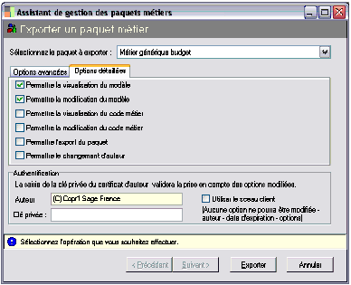
Le programme permet de définir des options accordées à l’utilisateur relatives à l’utilisation du développement.
On distingue six options :
- Permettre la visualisation du modèle.
- Permettre la modification du modèle.
- Permettre la visualisation du code métier.
- Permettre la modification du code métier.
- Permettre l’export du paquet.
- Permettre le changement d’auteur.
Authentification
Pour valider l’exportation, l’auteur ou/et le client doivent être authentifiés.
Vous devez renseigner l’auteur ainsi que la clé privée ou le sceau client.
Le § sur les ' «Certificats
», page 245' pour l'e détail de ces zones.
Modification des options et / ou d’auteur
Modification des options et / ou d’auteur
Le programme prévoit la modification des options d’un paquet métier, dans le cas d’une disparition de l’auteur du certificat d’origine ou d’un changement de base master . L’auteur du paquet peut transférer son développement sur un autre certificat et modifier les options détaillées du paquet déterminé dans la zone Paquet à transférer.
Certificats
Vous devez renseigner le nom et la clé privée du certificat d’origine et du certificat de destination.
Clé de dévérouillage Sage
Le nouveau partenaire, après avoir copié l’aléa Sage, doit demander à la société Sage une clé de dévérouillage dans le cas où la clé privée du certificat d’origine n’est pas connue. Une clé différente est nécessaire pour chaque paquet.
N’oubliez pas :
- de ne pas sortir de la fenête avant d’avoir obtenu la clé,
- de cocher la case Utiliser une clé de dévérouillage.
Options détaillées de paquet
Le programme permet de changer les options accordées à l’utilisateur relatives à l’utilisation du développement.
Le § ' «Exporter des 'paquets métiers
», page 294' pour le détail de ces zones.
Modifier la date d’expiration
Modifier la date d’expiration
Un certificat de modification de date d’expiration doit être généré avant de procéder à la modification de la date d’expiration ( Voir le § ci-dessous ).
Pour modifier la date d’expiration d’un paquet métier, il vous suffit de renseigner le nom du certificat. Les zones sont automatiquement renseignées après vérification par le logiciel que le certificat a bien été généré par l’auteur et correspond bien au paquet.
Vous validez par le bouton .
Certificat de la date d’expiration
Certificat de la date d’expiration
Le certificat de modification de la date d’expiration permet à un client de modifier la date d’expiration d’un paquet. Il est généré par l’auteur du paquet et installé sur le site du client utilisateur du paquet.
Vous devez renseigner la nouvelle date d’expiration du paquet ainsi que la clé privée du certificat d’auteur.
Cliquez sur le bouton
afin de valider la génération du certificat.
Assistant de Sauvegarde / Restauration / Transfert
Cet assistant a pour objectif de vous guider dans la procédure de sauvegarde et restauration de la base master.
Pour lancer l’assistant, vous avez deux solutions :
- 'Dans la barre d’outils de la console d’administration sélectionnez le menu 'Actions / Outils,
- Dans la barre d’outils, cliquez sur le bouton
- Lancer un assistant et sélectionner l’assistant de Sauvegarde / Restauration / Transfert.
Sélectionnez le traitement que vous souhaitez effectuer.
- Sauvegarde / Transfert,
- Restauration.
Le pavé Options de Sauvegarde est activé lorsque l’option Sauvegarde / Transfert est sélectionnée.
Le pavé Options de Restauration est activé lorsque l’option Restauration est sélectionnée.
Sélectionnez le dossier que vous souhaitez sauvegarder.
Options de Sauvegarde
Options de Sauvegarde
Vous pouvez effectuer :
- Une sauvegarde dans un répertoire,
- Un transfert dans une autre base master.
Le bouton
permet sélectionner un répertoire existant ou d’en créer un nouveau.
Exporter les rôles et associations
Lorsqu’elle est cochée, cette option permet de sauvegarder ou d’exporter les éventuelles associations existantes entre les éléments du référentiel.
Par exemple, si l’on exporte des utilisateurs ainsi que les groupes associés seules les associations valides seront sauvegardées. C’est à dire que si l’on sauvegarde les groupes sans les utilisateurs, les associations ne seront pas sauvegardées même avec cette option de sélectionnée
Sauvegarder les éléments de documentation
Lorsqu’elle est cochée, cette option permet de sauvegarder ou d’exporter les éléments de documentations servant à la génération de la documentation HTML. Ces éléments sont visibles dans le dossier Objets / Documentations / Interface. Ces éléments seront sauvegardés dans le répertoire défini plus haut.
Options de sauvegarde des objets
Options de sauvegarde des objets
Lorsque vous sauvegardez des éléments du dossier Objets, un nouvel écran vous permet de définir les options de sauvegarde spécifiques aux objets.
Un répertoire par type d’objet
Cette option permet la sauvegarde des différents types d’objets dans des répertoires séparés (objets métiers, systèmes, écrans…).
Cette option n’est pas valable pour les transferts vers une autre base
Uniquement les objets les plus récents
Cette option est valable uniquement lors de transferts de base à base. Elle transfère seulement les objets les plus récents.
Un descripteur XML par type d’objet
Cette option génère un descripteur XML par type d’objet. Elle permet de ré-enregistrer chaque type d’élément séparément dans la console d’administration.
Cette option n’est pas valable pour les transferts vers une autre base
Un descripteur XML par objet
Cette option génère un descripteur XML par objet. Cette fonction est nécessaire lors de la sauvegarde de certains objets. Elle permet de ré-enregistrer chaque élément séparément dans la console d’administration.
Cette option n’est pas valable pour les transferts vers une autre base.
Objets d’interface, un descripteur par projet
Cette option permet de générer un descripteur XML des objets d’interface ( un pour les écrans, un pour les reports) par projet métier.
Cette option n’est pas valable pour les transferts vers une autre base.
Uniquement les objets valides
Cette option permet de traiter les objets d’interface, hors objets de test ou non affectés à des projets.
Uniquement les projets validés
Si vous cochez cette option, les projets métiers dont le statut n’est pas validé ne seront pas sauvegardés.
Activer le read-only sur les objets extraits
Cette option transfère les objets d’interface en lecture seule.
Sauvegarder dans un fichier unique
Cette option assure que tous les objets sauvegardés le seront dans un fichier unique.
Cette option n’est pas valable pour les transferts vers une autre base.
Eléments de documentation sauvegardés
Cette option assure la sauvegarde des éléments de documentation associés aux objets d’interface sauvegardés (écrans, reports).
Options de restauration
Options de restauration
Importer les rôles et associations
Lorsqu’elle est cochée, cette option permet de restaurer les éventuelles associations définies entre les éléments sauvegardés dans le descripteur XML.
Uniquement les nouveaux éléments
Lorsqu’elle est cochée, cette option permet de restaurer uniquement les éléments les plus récents. Ceci est valable uniquement pour les objets intégrant une date de release.
Convertir les objets d’interface texte en binaire
Lorsqu’elle est cochée, cette option permet de convertir les objets au format xfm au format dfm.
Cliquez sur le bouton 
afin de poursuivre la Sauvegarde ou la Restauration.
Sauvegarder la sélection comme profil
Sauvegarder la sélection comme profil
Si vous souhaitez sauvegarder les mêmes éléments, vous pouvez sauvegarder la sélection réalisée dans l’arbre.
Sélectionnez les éléments à sauvegarder et activez le menu contextuel. Vous pouvez sauvegarder la sélection comme profil:
- dans un profil existant,
- dans un nouveau profil.
Vous pouvez cliquer sur le bouton Sauvegarder
pour valider la sauvegarde.
Charger le profil
Charger le profil
Lors d’une sauvegarde ultérieure, il est possible de charger un des profils sauvegardés et de le dupliquer dans la sélection.
Supprimer un profil
Supprimer un profil
Vous pouvez supprimer un profil en sélectionnant la commande «Supprimer un profil».
L’éditeur de menu permet de créer, de modifier, de personnaliser les menus utilisés pour naviguer dans vos différentes applications.
Il vous permet donc de limiter le contenu des menus aux fonctions dont vous avez besoin.
Pour accéder à l’éditeur de menus, cliquez sur le dossier de l’application à paramétrer (dans la colonne de gauche de la Console Administration) et choisissez la fonction «Modifier» du menu contextuel.
Présentation de la fenêtre de travail
Présentation de la fenêtre de travail
Le menu de l’application choisie apparaît à l’écran.
Depuis cet écran, vous pouvez :
- modifier les libellés des entrées menus,
- supprimer des entrées menus,
- ajouter de nouvelles entrées,
- créer des sous-menus.
Définition d'un élément d'un menu
Un élément de menu est identifié par les informations suivantes :
Libellé
Intitulé qui apparaît dans la barre de menu de l'application. Dans la fenêtre «Elément de menu», il doit être précédé du caractère &.
Aide ou URL
Renseignez éventuellement un message d’aide qui s’affichera lors du passage du curseur sur le libellé du menu.
Raccourci
Vous pouvez éventuellement associer un raccourci clavier à une fonction.
Cette possibilité n'est pas proposée pour un intitulé de menu.
Pour cela, sélectionnez un raccourci dans la liste proposée.
Type
Cette zone indique le type d'action déclenchée lorsque l'élément de menu est sélectionné par l'utilisateur :
- Menu Parent : pour un titre de menu ; lorsque l'utilisateur clique sur le titre, un menu s'affiche.
- Commande système : il s'agit des évènements gérés par le système de type nouveau, ouvrir, fermer, quitter…
- Exécution d'une URL : lorsque l'utilisateur clique sur l'élément de menu, l'adresse internet indiquée sur la zone Aide ou URL est exécutée.
- Accès à une fiche DFM : ce choix permet d'ouvrir un écran ou une requête que vous aurez préalablement paramétré ; son nom doit être indiqué dans la zone Nom objet.
- 'Lancement d'un 'écran défini : ce choix permet d'ouvrir un écran appartenant à l'application ; cet écran est identifié dans la zone Classe.
- Raccourci fichiers : lorsque ce choix est sélectionné, le fichier indiqué sur la zone Fichier lié (Link) est exécuté.
Actif / Visible
Pour qu'un élément de menu soit utilisable, les deux cases doivent être cochées.
Modification d'un menu
Pour modifier un menu, cliquez sur la partie du menu à modifier (titre du menu ou intitulé de fonction) puis effectuez les modifications dans la fenêtre «Elément de menu».
Le contenu de la fenêtre «Elément de menu» est modifié instantanément en fonction de votre sélection :

Création d'un menu, d’une fonction
Pour créer un nouveau menu ou une nouvelle fonction, il suffit de positionner le curseur sur l'emplacement libre du menu ou de la barre de menu :
Pour créer un menu à un autre emplacement, faites un clic droit à l'endroit souhaité puis choisissez la fonction Insérer une entrée de menu.

Insertion d'un séparateur de menu

Sélectionnez l’endroit où vous voulez insérer le séparateur et validez la fonction Insérer un séparateur du menu contextuel.
Le séparateur vient s’insérer au dessus de la ligne que vous sélectionnez ; dans notre exemple, au-dessus de « Panneau de configuration ».
Insertion d'un sous-menu
La création d’un sous-menu se fait en 2 étapes :
tout d’abord, vous devez créer l’entrée du sous-menu si celle-ci n’existe pas déjà ;
puis définir son contenu.
Créez l’entrée de menu qui ouvrira le sous-menu (vous pouvez également utiliser une entrée de menu existante).
Placez le curseur sur le titre à partir duquel le sous-menu devra s'ouvrir et sélectionnez la fonction Créer un sous-menu du menu contextuel.
Le sous-menu est alors créé et un emplacement libre y est proposé :
Renseignez ensuite la fenêtre «Elément de menu» pour chacune des entrées de ce sous-menu.
Un sous-menu peut bien entendu contenir plusieurs entrées de menus.
Pour supprimer un menu, une entrée menu ou un sous-menu, cliquez sur le menu à supprimer, puis sélectionnez la fonction Supprimer du menu contextuel.
La suppression d’un sous-menu entraîne la suppression de toutes les entrées du sous-menu.
Activité en cours
Le dossier Activité en cours permet à l’administrateur de visualiser les connexions en cours des utilisateurs des applications de la Ligne 1000 :
- visualiser les utilisateurs connectés,
- débloquer les verrous sur les objets,
- analyser les traces des évènements.
Connexions actives
Connexions actives
Ce dossier affiche la liste des utilisateurs actuellement connectés aux applications de la Ligne 1000 :
Pour chaque utilisateur sont indiqués :
- son nom complet,
- la date et l’heure de sa dernière connexion,
- la société de travail.
Pour déconnecter un utilisateur
Ce dossier vous permet de déconnecter un utilisateur. Cette possibilité peut être intéressante lorsqu’un utilisateur est sorti anormalement du logiciel (consécutivement à une coupure de courant pas exemple). Il est dans ce cas considéré comme toujours connecté. Pour le « libérer » :
Sélectionnez l’icône le représentant,
Validez la fonction Libérer de son menu contextuel :
Verrous sur les objets
Verrous sur les objets
Ce dossier, normalement vide, affiche les verrous posés sur les objets.
Lors de l’utilisation courante des logiciels de la Ligne 1000, les verrous sont « posés » et « levés » automatiquement par le système.
Pour supprimer un verrou
Lorsqu’un utilisateur sort anormalement du logiciel (consécutivement à une coupure de courant pas exemple) il se peut que le verrou n’ait pas été levé.
L’objet est dans ce cas considéré comme en cours d’utilisation.
Pour le « libérer » :
Sélectionnez l’icône le représentant,
Validez la fonction Libérer de son menu contextuel.
Traces d’évènements
Traces d’évènements
La gestion des traces permet de « suivre » les modifications (création, modification, et suppression) apportées par les utilisateurs aux données de l’application, ainsi que l'exécution des traitements et les messages générés par ces derniers.
L’application peut « tracer » :
- la modification d’une classe ou d’un attribut d’une classe
- l’insertion dans une classe,
- la suppression dans une classe,
- l’exécution des méthodes publiées d’une classe ou d’une méthode de classe.
Le déclenchement des traces peut être conditionné par une expression.
Le dossier Traces du dossier Sécurité donne un aperçu des traces enregistrées par utilisateur.
La mention (hors société) signifie que la trace s’applique à toutes les sociétés confondues, une trace pouvant être a contrario définie pour une société particulière.
Les traces sont définies par objet métier ou objet interface, pour un utilisateur ou pour un groupe d’utilisateurs ou sans affectation particulière.
Créer une trace
Une trace peut être appliquée :
- à un objet,
- à un écran,
- à une requête.
Pour un objet
Pour définir une trace sur un objet particulier, déployez les dossiers :
Objets
puis Métiers ou Interfaces,
…. en fonction du domaine d’application de la trace à définir.
Déployez ensuite successivement :
Le métier qui vous intéresse
Le dossier Classes
La classe pour laquelle vous souhaitez définir une trace.
Sélectionnez le dossier Traces puis affichez son menu contextuel.
Pour une société
Pour définir un trace pour un utilisateur sur une classe, pour une application et une société données, déployez successivement les dossiers :
Objets
Métiers
Le métier qui vous intéresse
Classes
Vous sélectionnez la classe pour laquelle vous souhaitez définir la trace et, sans relâcher le bouton de la souris, vous glissez son icône sur le dossier Traces contenu dans le dossier :
Sociétés
Le dossier de la société de travail
Le dossier de l’application utilisée
Le dossier de l’utilisateur
Lorsque vous relâchez la souris, la fenêtre de paramétrage du droit apparaît. Sa barre de titre rappelle : Traces sur la classe [Classe] associé à [Utilisateur] [Nom de l’application].
Pour définir la trace d’un utilisateur sur la classe Journal comptable, ouvrez successivement les dossiers :
Objets
Métiers
[Objet dyn.] – Métier Environnement comptable
Classes
Vous cliquez sur la classe Journal comptable et, sans relâcher le bouton de la souris, vous le glissez sur le dossier Traces de :
Sociétés
Le dossier de la société de travail (Société Compta Projets)
Le dossier de l’Application utilisée (Comptabilité générale & financière)
Le dossier de l’utilisateur
Pour un attribut
L’enregistrement d’une trace sur un attribut peut également s’effectuer à partir des écrans des applications. L’accès au paramétrage des traces se fait par la combinaison de touches Ctrl et F7.
Refermez la Console d’administration et ouvrez une application.
Affichez la fenêtre contenant l’attribut sur lequel vous souhaitez enregistrer des droits, puis tapez simultanément les touches Ctrl et F7.
La fenêtre «Définition de traces sur la classe [nom de la classe]» se superpose à la fenêtre initiale :
Par exemple, pour l’application Sage 1000 Gestion Comptable et Financière, vous souhaitez définir une trace sur l’attribut Nature du journal (natureJournal) :
validez la fonction Paramètres / Comptabilité Générale / Journaux Comptables
tapez Ctrl et F7
cliquez sur l’emplacement de l’attribut « natureJournal »
Utilisateurs concernés
Le menu contextuel vous propose d’enregistrer une trace pour un utilisateur, un groupe d’utilisateurs ou encore globalement, sans affectation particulière.
Si l’enregistrement de la trace est demandé depuis une fenêtre de l’application (par Ctrl etF7) l’enregistrement d’une trace globale n’est pas proposé.
Vous choisissez « Définir… »
La fonction Définir… vous permet d’enregistrer une trace sans affectation particulière à un utilisateur, une société ou une application.
Vous choisissez « Définir pour l’utilisateur… » ou « pour le groupe… »
Si une trace est définie pour un ou plusieurs utilisateurs, elle s’appliquera sur toutes les applications et sociétés utilisées par les utilisateurs concernés (et pour la classe choisie).
Si une trace est définie pour la classe Journal comptable, pour un Groupe d’utilisateurs Service Compta générale, elle s’appliquera à chaque fois que les utilisateurs du groupe (toutes applications et sociétés confondues) agiront sur la classe Journal comptable.
Si une trace est définie pour un ou plusieurs utilisateurs dans une application (appartenant à une société), elle ne s’appliquera que sur cette application et cette société.
Après sélection, la fenêtre de paramétrage de la trace apparaît.
Paramétrage d’ une trace
Cliquez sur l’onglet correspondant à l’élément à « tracer » : les classes, les attributs ou les méthodes.
Cliquez ensuite sur le bouton d’insertion pour afficher la fenêtre de paramétrage.
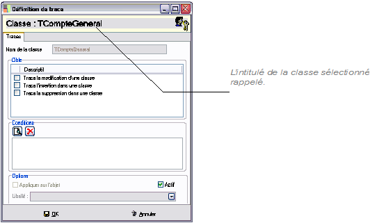
Cette fenêtre se décompose en trois parties :
- les restrictions : cet encadré liste les actions qui, si elles sont cochées, seront « tracées » ;
- les conditions : ce sont les conditions d’application des traces ;
- les options : qui permettent de préciser le champ d’application de la trace.
Les traces sur les classes
Cochez, parmi les choix proposés les actions à tracer sur la classe sélectionnée :
- la modification d’une classe
- l’insertion dans une classe
- la suppression dans une classe
- l’exécution des méthodes publiées d’une classe.
Soit la classe Journal comptable (TJournal) accessible lorsque vous ouvrez successivement :
Objets
Métiers
[Objet dyn.] – Métier Environnement comptable
Classes
Dans l’application Sage 1000 Gestion Comptable et Financière , cette classe est accessible par la fonction Paramètres/Comptabilité générale/Journaux comptables.
| Si vous demandez … | Sera tracée … |
| Trace la modification d’une classe | Toute modification apportée à un journal comptable |
| Trace l’insertion dans une classe | Toute création d’un journal comptable |
| Trace la suppression dans une classe | Toute suppression d’un journal comptable |
| Trace l’exécution des méthodes publiées d’une classe | Toute exécution de méthode portant sur un journal comptable |
| Trace la modification d’une classe | Toute modification apportée à un journal comptable |
| Trace l’insertion dans une classe | Toute création d’un journal comptable |
Les traces sur les attributs
Attribut
Nom de l’attribut
Vous sélectionnez l’attribut pour lequel vous souhaitez enregistrer la trace.
Sélectionnez l’attribut par un double-clic.
Restrictions
Trace la modification d’un attribut d’une classe
Cochez cette option si, pour la classe choisie, vous souhaitez tracer l’attribut sélectionné.
Toujours pour la classe Journal comptable (TJournal) (cf exemple précédent), pour l’attribut Nature du journal (natureJournal) :
| Si vous demandez …. | Sera tracée … |
| Trace la modification d’un attribut d’une classe | Toute modification de la zone Nature du journal (pour n’importe quel journal comptable) |
Les traces sur les Méthodes
Méthode
Nom de la méthode
Vous sélectionnez, sur la liste déroulante, la méthode que vous souhaitez tracer.
Restrictions
Trace l’exécution d’une méthode d’une classe
Cochez cette option si, pour la classe choisie, vous souhaitez tracer la méthode sélectionnée.
Toujours pour la classe Journal comptable (TJournal), pour la méthode Nature du journal (autoriserCompte) :
| Si vous demandez …. | Sera tracée … |
| Trace l’exécution d’une méthode d’une classe | Tout rajout d’un compte interdit (pour n’importe quel journal comptable) |
Conditions
Des conditions d’application peuvent être associées à la trace.
Si une ou plusieurs conditions sont enregistrées, la trace ne sera appliquée que si elle(s) est (sont) remplie(s).
Cliquez sur le bouton Modifier pour afficher la fenêtre de saisie de la condition.
Pour tout renseignement sur l’Editeur de filtre, voir le man'uel Designer d’écran.
Options
'Si la trace est définie depuis la 'Console d’administration, seule la zone Actif est accessible. Les autres options peuvent être paramétrées lorsque la trace est définie depuis une application, par la combinaison de touches Ctrl+F7.
Les options suivantes peuvent être associées à une trace :
Appliquer sur l’objet / Libellé
Si vous cochez la zone Appliquer sur l’objet, la zone Libellé vous permet de sélectionner l’intitulé d’un objet précis de la classe.
Vous définissez une trace pour l’attribut Lettrable de la classe Compte général.
Vous pouvez demander que cette trace ne s’applique qu’à un objet particulier : Clients Ventes export. Chaque fois qu’un utilisateur modifiera la zone Lettrable du compte Clients Ventes export, une trace sera déclenchée.
Actif
Si la trace est active (cette zone est cochée) dès la prochaine manipulation, elle sera déclenchée. Pour mettre la trace « en sommeil », décochez cette option.
Analyser le résultat d’une trace
Analyser le résultat d’une trace
Pour consulter le résultat d’une trace, ouvrez successivement les dossiers Gestion, Activité en cours et Traces d’évènements.
Sélectionnez la base de données utilisée et affichez le menu contextuel pour valider la commande Analyser les traces.

Sélection des traces
Paramètres de recherche
Sélectionnez une période de recherche sur les zones Entre la date du… et Et la date du….
La partie gauche de la fenêtre affiche alors les traces d’évènements pour le mode tri proposé par défaut : les utilisateurs.
Mode de tri
Ce bouton vous permet de trier la liste des traces enregistrées par :
- Utilisateurs,
- Dates,
- Evènements,
- Classes d’objets,
- Attributs.
Sélection par évènement
Le bouton Evènements vous permet de limiter le nombre de traces affichées en fonction de la nature de l’événement.
Par défaut, toutes les natures d’événement sont sélectionnées :
Pour sélectionner ou désélectionner un événement, il suffit d’amener le curseur de la souris dessus.
Seules les traces enregistrées pour les évènements cochés seront affichées.
Affichage des traces

Pour afficher les traces d’évènements répondant aux critères choisis, cliquez sur le bouton Rafraîchir.
Barre d’outils des grilles
Le menu Généralités de Sage 1000 Gestion Comptable et Financière ou celui de Sage 1000 Trésorerie.
Détail des traces
Double-cliquez sur l’alias de l’utilisateur dans la partie gauche de la fenêtre pour afficher le détail des évènements qui lui sont rattachés.
Informations sur l’évènement
Pour chaque événement, sont listés :
- l’alias de l’utilisateur,
- la date de l’évènement affiché,
- le type d’évènement,
- la classe objet concernée par l’évènement,
- le libellé de l’objet modifié (attribut Caption),
- l’attribut concerné par l’évènement,
- l’OID Objet correspondant , soit son identifiant,
- la valeur avant l’évènement,
- la valeur après l’évènement.
Le bouton
permet de visualiser le journal des événements de type Processus.
La barre d’outils «Trace» vous permet de supprimer un ou plusieurs évènements de la liste.
Sélection des traces à supprimer
Ce bouton vous permet de demander la suppression d’une ou plusieurs traces. Cliquez successivement sur chaque ligne à supprimer puis sur ce bouton ; elle(s) apparaît(ssent) cochées(s).
Suppression des traces
Ce bouton vous permet de demander la suppression effective des traces cochées ; après votre confirmation, la liste apparaît réduite.
Vous cliquez sur ce bouton pour supprimer définitivement toutes les traces affichées ; après votre confirmation, la liste apparaît vide.
Modifier une trace
Pour modifier le paramétrage d’une trace, sélectionnez son intitulé puis choisissez la commande Modifier du menu contextuel.
Une trace peut être modifiée depuis le dossier Objets ou depuis le dossier Sécurité :
Pour modifier une trace enregistrée sur la classe Journal comptable pour un utilisateur :
Ouvrez successivement les dossiers Objets, Métiers, Métier Environnement comptable, Classes, Journal comptable, puis Traces.
Le nom de l’utilisateur apparaît. Cliquez sur son nom et validez la commande Modifier de son menu contextuel :
Ou bien, ouvrez successivement les dossiers 'Sécurité, Traces, puis le dossier de l’utilisateur.
Le nom de la classe Tjournal apparaît.
Cliquez sur son nom et validez la commande Modifier de son menu contextuel.
La fenêtre «Traces sur la classe […] associé à […]» réapparaît telle qu’elle vous a été présentée lors de la création de la trace.
Pour plus d'informations sur la fenêtre de ' «Paramétrage d’une trace
», page 327' ' .
Supprimer une trace
Supprimer une trace
Pour supprimer une trace, vous appelez sa fenêtre de paramétrage par la fonction Modifier du menu contextuel puis, pour chaque condition enregistrée :
vous sélectionnez sa ligne,
puis vous cliquez sur le bouton de suppression.

Le programme affiche un message avant d’entériner la suppression.
Cliquez sur le bouton Ok pour confirmer la suppression.
| Whos here now: Members 0 Guests 3 Bots & Crawlers 0 |